freiesMagazin September 2011 (ISSN 1867-7991)
Topthemen dieser Ausgabe
Plattformen für die Entwicklung und Verwaltung von Open-Source-Projekten
Beim Erlernen einer Programmiersprache macht man sich gewöhnlicherweise wenig Gedanken über eine Versionsverwaltung. Mit zunehmendem Fortschritt gelangt man jedoch häufig an einen Punkt, an dem man nicht mehr für sich alleine ein Projekt entwickelt. Besonders die Open-Source-Gemeinde ist dabei auf die Mitarbeit der Gemeinschaft aus aller Welt angewiesen. (weiterlesen)
„I don't like spam“, oder wie man einen Mailserver testet
Es begann mit einem Irrtum. Im Werbebrief vom Google für den AdWords-Dienst befand sich ein Gutschein über 75 Euro, der auf einen völlig fremden Menschen ausgestellt war. Wenn man Sandra Fründt, Head of Business Marketing Google Deutschland, auf ihren Fehler aufmerksam machen will, stößt man auf ein Problem: Im Schreiben ist überhaupt keine E-Mail-Adresse angegeben. Die Frage ist: Wie findet man die E-Mail-Adresse heraus und kann dazu noch testen, ob sie existiert? (weiterlesen)
i3 – ein Tiling Fenstermanager
Fenstermanager gibt es viele, die bekanntesten sind wohl Metacity (GNOME 2), KWin (KDE) oder Compiz. Diese Fenstermanager verfolgen alle ein ähnliches Konzept: Die Fenster liegen relativ ungeordnet auf dem Bildschirm und können überall hin verschoben werden. Tiling Fenstermanager – wie i3 – bauen auf einem anderen Konzept auf: Diese behandeln den Bildschirm wie eine Art Tabelle. Dadurch sind die Fenster (bis auf Ausnahmen) an einem festen Platz und können durch Tastenkombinationen in andere Positionen gebracht werden. (weiterlesen)
Zum Index
Inhalt
Linux allgemein
Plattformen für die Entwicklung und Verwaltung von Open-Source-Projekten
Trinity – Desktop ohne Zukunft
Der August im Kernelrückblick
Anleitungen
Wie man einen Mailserver testet
Perl-Tutorium: Teil 2
Software
i3 – ein Tiling Fenstermanager
Cassandra – Die Datenbank hinter Facebook
Community
Rezension: The Python Standard Library
Rezension: Python von Kopf bis Fuß
Magazin
Editorial
Leserbriefe
Veranstaltungen
Konventionen
Impressum
Zum Index
Editorial
Mehret und teilet EuchfreiesMagazin vergrößert sich
Letzten Monat riefen wir auf unserer Webseite [1] und natürlich auch im Editorial der freiesMagazin-Ausgabe 08/2011 [2] zur Unterstützung unseres Teams auf. Gesucht waren Layouter, Korrektoren und Autoren. In den ersten beiden Kategorien hatten wir viele Zuschriften, sodass wir das Team entsprechend aufstocken konnten. Acht neue Mitglieder hat freiesMagazin dazu gewonnen, die uns nun tatkräftig unterstützen und die alten Teammitglieder entsprechend entlasten. Die Alteingesessenen werden den „Noobs“ aber natürlich ebenfalls mit Rat und Tat zur Seite stehen. Autoren werden aber natürlich auch weiterhin gesucht. Derzeit erkennen wir bei geplanten Artikeln einen sehr starken Hang zu Programmierthemen. Sicherlich ist ein Großteil unserer Leser irgendwie mit Programmiersprachen in Kontakt, sodass sich die meisten dafür begeistern können. Dennoch wollen wir auch etwas Abwechslung bieten, sodass jeder dazu aufgerufen ist, das Magazin mitzugestalten. freiesMagazin lebt von den Inhalten, die von den Lesern für die Leser geschrieben werden.freiesMagazin teilt sich
Ein Leser fragte uns kürzlich, ob man die Artikel im Magazin auch einzeln als PDF herunterladen kann. Bisher ist so etwas nicht möglich, auch wenn sich natürlich jeder mit pdftk (siehe freiesMagazin 03/2009 [3]) oder per Druckdialog seine Lieblingsthemen selbst speichern kann. Dennoch möchten wir wissen, ob der Wunsch bei den Lesern überhaupt da ist, das PDF in einzelnen Teilen direkt herunterladen zu können. Aus dem Grund haben wir eine Umfrage gestartet [4]. Dabei kam dann auch gleich die Frage auf, ob man die HTML-Mobilversion ebenfalls nicht besser in einzelne Seiten aufspaltet und nicht mehr als ganzes anbietet. Dies würde dann eine direkte Verlinkung leichter machen und spart auch etwas Ladezeit. Zusätzlich kann man diese Versionen dann leichter drucken, wenn man nur an einem Thema interessiert ist. Wir sind gespannt auf Ihre Antworten und wünschen Ihnen nun viel Spaß mit der Ausgabe. Ihre freiesMagazin-Redaktion Links[1] http://www.freiesmagazin.de/20110725-freiesmagazin-sucht-unterstuetzung
[2] http://www.freiesmagazin.de/freiesMagazin-2011-08
[3] http://www.freiesmagazin.de/freiesMagazin-2009-03
[4] http://www.freiesmagazin.de/20110828-sollen-artikel-einzeln-abrufbar-sein
Das Editorial kommentieren
Zum Index
Plattformen für die Entwicklung und Verwaltung von Open-Source-Projekten
von Patrick Meyhöfer Beim Erlernen einer Programmiersprache macht man sich gewöhnlicherweise wenig Gedanken über eine Versionsverwaltung. Mit zunehmendem Fortschritt gelangt man jedoch häufig an einen Punkt, an dem man nicht mehr für sich alleine ein Projekt entwickelt. Besonders die Open-Source-Gemeinde ist dabei auf die Mitarbeit der Gemeinschaft aus aller Welt angewiesen. In der Regel kann ein Versionsverwaltungssystem wie CVS, SVN, Git oder Mercurial, um nur einige zu nennen, auch einfach über die Paketverwaltung auf dem eigenen System installiert und genutzt werden. Der Reiz der nachfolgenden Plattformen ist jedoch, dass diese weltweit über das Internet von jedem Entwickler und potentiell interessiertem Nutzer erreichbar sind und einige interessante Zusatzfunktionen bieten.SourceForge
Eine der ältesten (1999 gegründet) und am meisten genutzten Plattformen mit über 300.000 Projekten und mehr als 2 Millionen registrierten Benutzern ist SourceForge [1]. Viele bekannte Programme hosten ihren Quelltext dort, z. B. Inkscape, FileZilla, Pidgin u. v. m. 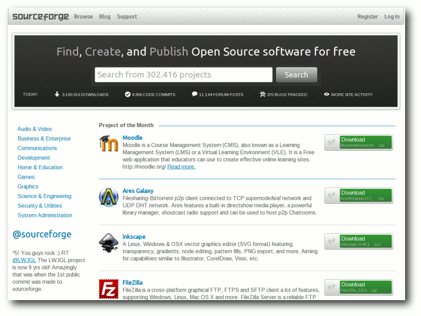Die Startseite von SourceForge.
Funktionen
Schaut man sich die umfangreichen Funktionen [2] von SourceForge näher an, bemerkt man, dass bereits fast alles vorhanden ist, was man sich als Entwickler so vorstellen kann:- unterstützt werden Git, Mercurial und SVN
- zentrales Verzeichnis (engl. Repository) des gesamten Quelltextes und weiterer Dokumente, sowie Mailinglisten, Foren und Diskussionsbeiträge
- Berechtigungsvergabe
- detaillierte Statistiken
- Ticketsystem für Fehlermeldungen
Registrierung und Erstellung eines Projektes
Die Registrierung läuft problemlos und schnell ab. Da es heute bereits fast zum guten Ton gehört, bietet auch SourceForge eine Registrierung über OAuth an, sodass man nicht das Registrierungsformular ausfüllen muss, sondern sich über Anbieter wie Google oder Yahoo, nach einer kurzen Bestätigung auf SourceForge anmelden kann. Ein Projekt ist nach der Anmeldung sehr schnell erstellt. Man vergibt einen Projektnamen und eine URL, unter der das Projekt erreichbar ist. 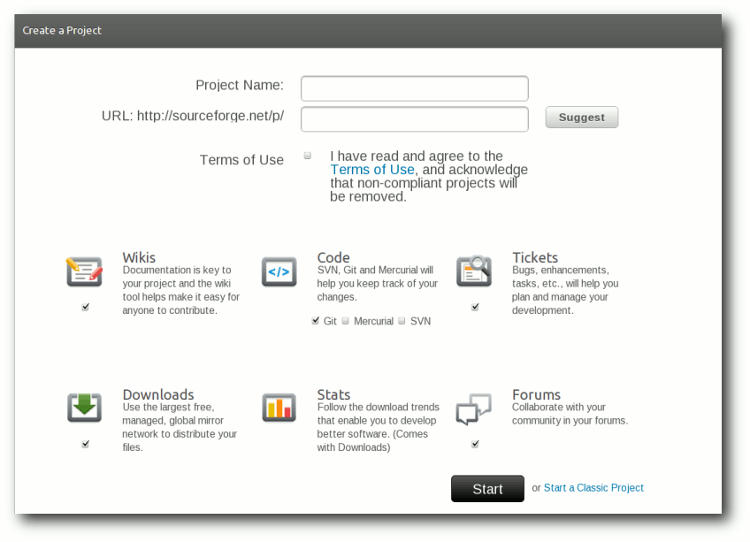Ein Projekt auf SourceForge erstellen.
Zusätzlich kann man verschiedene Optionen auswählen, wobei die Verwendung des Versionssystems eine der wichtigsten Entscheidungen ist. Sind alle Einstellungen erledigt, landet man in dem optisch gut gestalteten Admin-Bereich. 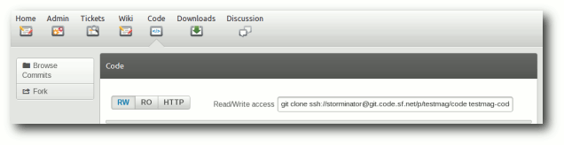
Die Administrationsmöglichkeiten bei SourceForge.
Ab da kann man mit der Verwaltung des Projektes beginnen, u. a. mit dem Einblick in offene Tickets, dem Schreiben von Wikiseiten, dem Einsehen von Statistiken usw.
Google code
Ebenfalls sehr beliebt ist die Plattform Google code [3]. Google nutzt die Plattform als seine zentrale Basis für die Entwicklung des Smartphone-Betriebssystems Android oder für das Google Web Toolkit. Zudem bietet es aber allen Entwicklern von Open-Source-Projekten ebenfalls eine Möglichkeit, ihr Projekt zu veröffentlichen und zu verwalten. 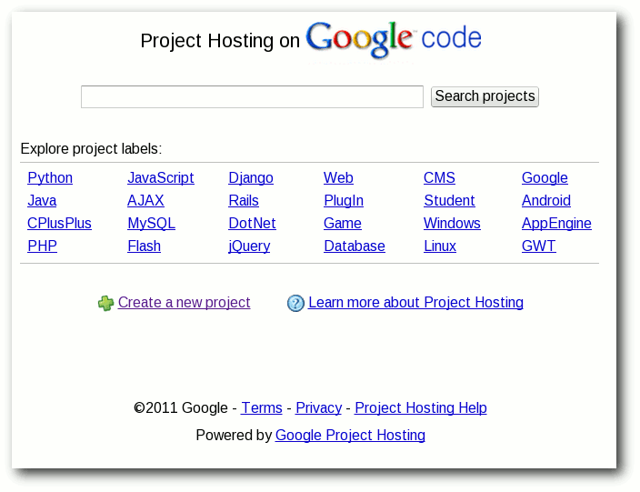Die Startseite von Google code.
Funktionen
Etwas weniger umfangreich als SourceForge, aber doch mit allen nötigen Funktionen, die man zum Grundumfang zählen sollte, kann auch Google code aufwarten. So stellt Google folgende Funktionen bereit:- zentrales Verzeichnis (engl. Repository) des gesamten Quelltextes und weiterer Dokumente
- 2 GB Speicherplatz für Dateien im Verzeichnisbaum und 2GB im Downloadbereich
- unterstützt werden Git, Mercurial und SVN
- Dateien online bearbeiten inklusive Syntax-Hervorhebung (wurde extra für Chrome OS eingeführt)
- Wiki
- Ticketsystem für Fehlermeldungen
Registrierung und Erstellung eines Projektes
Sofern man einen Google-Account sein Eigen nennt, benötigt man keine weitere Registrierung und kann direkt auf der Einstiegsseite ein neues Projekt erstellen. Es werden, ähnlich wie bei SourceForge, lediglich einige wenige Standardinformationen abgefragt. Man sollte allerdings, wie bei fast allen Plattformen, der englischen Sprache zumindest grundlegend mächtig sein, da die Seiten selten ins Deutsche übersetzt sind. 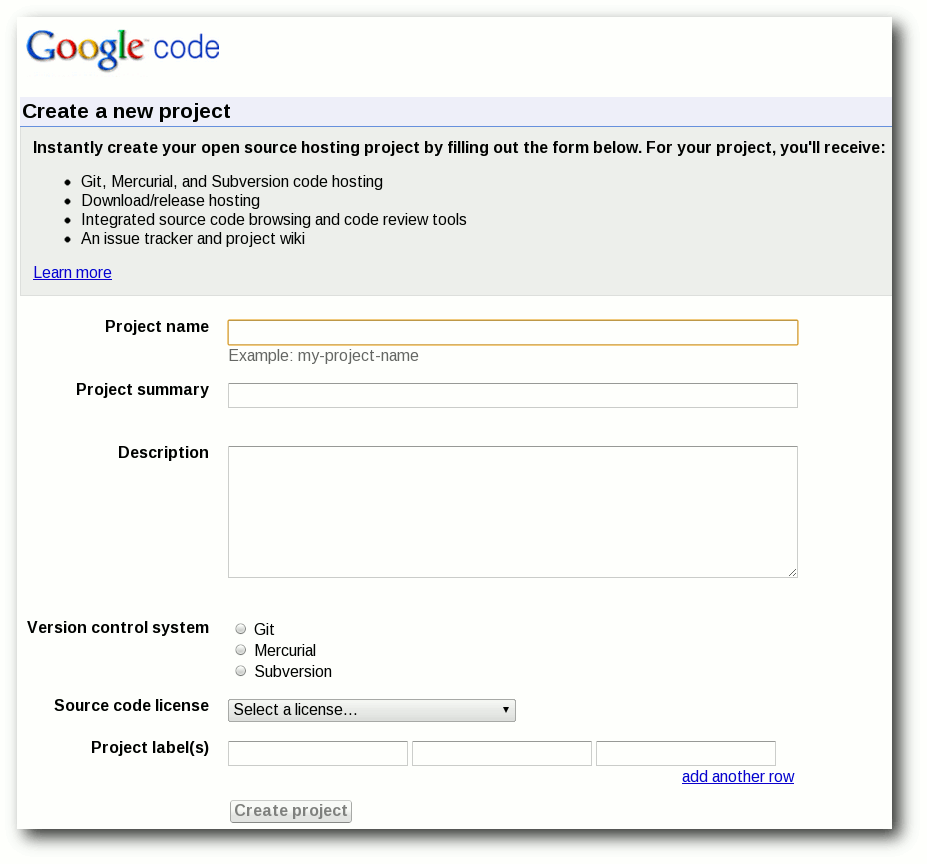Ein Projekt auf Google code erstellen.
Anschließend landet man im Admin-Bereich, der Google-typisch recht schlicht und im klassischen Design gehalten ist. 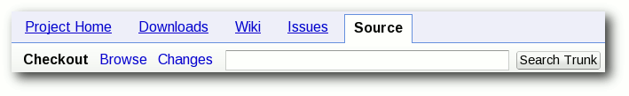
Der Administrationsbereich von Google code.
GitHub
Mit der wachsenden Beliebtheit von Git als verteiltes, dezentrales System (d. h. man benötigt nicht zwingend einen Server) findet GitHub [5] immer größeren Zuspruch [6]. Laut eigener Aussage nutzen bereits über 900.000 angemeldete Benutzer GitHub. Im Gegensatz zu SourceForge oder Google code bietet GitHub auch Hosting gegen Bezahlung an, sofern das entwickelte Projekt keine Open-Source-Lizenz besitzt. Für alle quelloffenen Projekte ist die Plattform jedoch kostenlos. Einige sehr bekannte Projekte, die ihre Quelltexte auf GitHub verwalten sind z. B. jQuery, PHP und Perl. 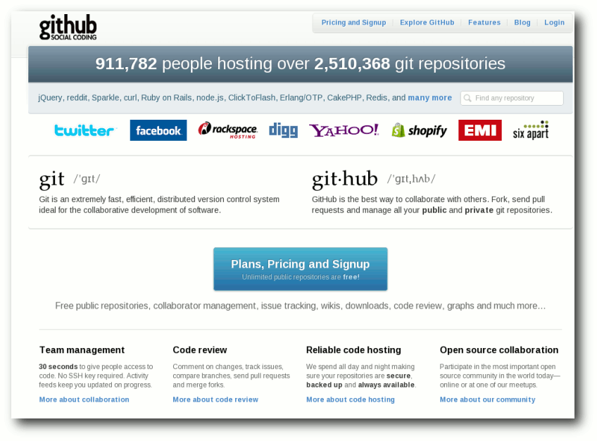Die Startseite von GitHub.
Funktionen
Im Vergleich zu den bereits vorgestellten Plattformen steht auch GitHub in Sachen Funktionalität nicht nach. So bietet GitHub:- zentrales Verzeichnis (Repository) des gesamten Quelltextes und weiterer Dokumente
- Quelltext-Management nur mit Git
- Dateien online bearbeiten, inklusive Syntax-Hervorhebung
- Wiki
- Ticketsystem für Fehlermeldungen
Registrierung und Erstellung eines Projektes
Bei der Registrierung muss man sich entscheiden, ob man einen kostenlosen Account anlegt, der dann nur für Open-Source-Projekte genutzt werden darf oder verschiedene andere Preismodelle nutzt. Es werden bei der Anmeldung nur Benutzername, E-Mail-Adresse und das Passwort für die Registrierung benötigt. Die Prozedur im Anschluss ist analog zu oben bereits beschriebenem Vorgehen: Projekt nach dem Login erstellen und man gelangt zum Adminbereich. 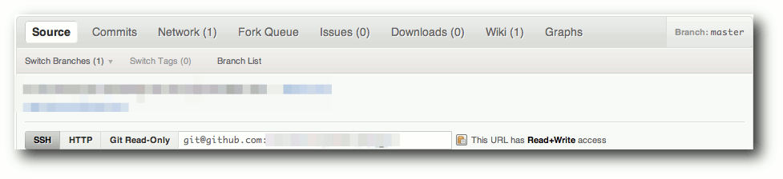Die Verwaltung des Projekts auf GitHub.
Alternativen in der Kurzübersicht
Die drei aufgeführten Plattformen sind meiner Meinung nach die populärsten und meist genutzten Angebote in der FOSS-Gemeinschaft. Wer bisher noch keine passende Plattform in diesem Beitrag gefunden hat, sollte sich einmal folgende Alternativen näher ansehen:- Gitorious [7] – als Alternative zu GitHub
- Launchpad [8] – besonders bei der Ubuntu-Entwicklung interessant und viel genutzt (PPA erstellen etc.); nutzt Bazaar
- Codeplex [9] – von Microsoft, vorwiegend für die .NET-Entwicklung genutzt
- Bitbucket [10] – für Mercurial-Projekte
- BerliOS [11] vom Fraunhofer-Institut betrieben und durch öffentliche Gelder gefördert
- JavaForge [12] – läuft auf der Amazon Cloud
Fazit
Wer einen guten und verlässlichen Dienst für seine Entwicklung sucht, ist mit allen Diensten gut bedient. Für kleinere und mittlere Projekte bietet sich meiner Meinung nach Google code an, da es eine sehr übersichtliche und schnelle Benutzerschnittstelle bietet. Der Registrierungsprozess, wenn man noch kein Google-Konto besitzt, ist allerdings der aufwändigste. Legt man mehr Wert auf große Funktionsvielfalt und der jahrelangen Erfahrung, ist man mit großen Projekten bei SourceForge besser aufgehoben. Der neue Trend für alle, die auf Git setzen, scheint derzeit GitHub zu sein. Das relativ junge Projekt mit dem neuartigen Ansatz scheint für die Zukunft ebenfalls gerüstet. Möchte man keinem fremden Dienst seine Quelltexte anvertrauen, so ist als Alternative auch ein eigens aufgesetzter Server möglich, der verhältnismäßig schnell eingerichtet ist. Links[1] http://sourceforge.net/
[2] http://sourceforge.net/apps/trac/sourceforge/wiki/WikiStart#HostingwithSourceForge.net
[3] http://code.google.com/hosting/
[4] http://www.linux-magazin.de/NEWS/Google-gibt-Git-Support-fuer-Google-Code-bekannt
[5] https://github.com/
[6] http://www.heise.de/developer/meldung/Microsoft-Open-Source-Entwickler-bevorzugen-Code
[7] http://gitorious.org/
[8] https://launchpad.net/
[9] http://www.codeplex.com/
[10] https://bitbucket.org/
[11] http://www.berlios.de/
[12] http://www.javaforge.com/project/11
[13] http://redmonk.com/sogrady/2011/06/02/blackduck-webinar/
[14] http://en.wikipedia.org/wiki/Comparison_of_open_source_software_hosting_facilitie
[15] http://www.netzwelt.de/news/87291_2-einfuehrung-dezentrale-versionsverwaltung-programm-git.html
| Autoreninformation |
| Patrick Meyhöfer (Webseite) ist durch sein Studium auf die verschiedenen Versionskontrollsysteme aufmerksam geworden und hat seitdem viele Hostingangebote für Open-Source-Software getestet. |
Zum Index
Trinity – Desktop ohne Zukunft
von Martin Gäßlin Das Trinity Desktop Environment [1] ist ein von Timothy Pearson ins Leben gerufener Fork [2] der Desktopumgebung KDE 3.5. In diesem Artikel wird aus Sicht eines KDE4-Entwicklers dargestellt, wieso das Projekt keine Zukunft hat.Was ist Trinity?
Trinity startete anfangs mit einigen Codeänderungen an KDE 3.5, die für ein weiteres KDE 3.5.11 vorgeschlagen wurden, nachdem die ersten Releases der moderneren 4.x-Serie bereits erfolgt waren [3]. Dies wurde von vielen KDE-Entwicklern mit Unverständnis aufgenommen [4] und vom Release Team wurde klargestellt, dass es keine weiteren Releases für KDE 3.5 geben wird und der Branch für Feature-Entwicklung geschlossen ist [5]. Des Weiteren wurde es als Problem angesehen, dass der Code nicht von den Hauptentwicklern begutachtet wurde und deshalb, um Verwechslungen zu vermeiden, nicht den Namen „KDE“ verwenden sollte [6]. Dies führte im März 2010 dann zur ersten Veröffentlichung von Trinity mit der Versionsnummer 3.5.11 [7]. Trinity startete mit dem Code von KDE 3.5.10 und integrierte eigene Patches und Patches von verschiedenen Distributionen, die zu diesem Zeitpunkt KDE 3.5 noch im Angebot hatten. Trinity lebt als eigener Branch in den KDE-Repositories [8]. Man könnte also sagen, dass Trinity den „Segen“ von KDE erhalten hat, 3.5 zu forken.Geschichtlicher Abriss
KDE 3.5 erblickte im November 2005, vor mehr als fünf Jahren, das Licht der Welt. Seitdem wurden nur noch Maintenance-Releases veröffentlicht, welche mit 3.5.10 im August 2008, also etwa drei Jahre nach dem ersten Release, eingestellt wurden. Das 3.5-Release wurde von der Community als letzte Veröffentlichung der 3.x-Serie geplant und in dem Release Announcement findet sich bereits der Hinweis, dass die nächste Version KDE 4 sein wird [9]. Über die APPEAL-Meetings [10] wurde die Richtung ausgearbeitet, in welche die zukünftige Entwicklung weitergehen sollte. Dies zeigte sich auch auf der Entwicklerkonferenz aKademy 2005 in Malaga, bei der KDE4 das große Thema war [11]. Nun entscheidet sich eine Entwickler-Community wie KDE mit hunderten von Entwicklern nicht einfach so aus Spaß für ein Projekt wie KDE4 und die großen Änderungen, die damit einhergingen. Hierfür muss es triftige Gründe geben. Einer davon war, dass im Juni 2005 die erste Version von Qt 4 veröffentlicht wurde und KDE 3.5 noch auf Qt 3 aufbaute. Qt 4 stellte einen größeren Umbruch dar, bei dem es mit einfachem Neu-Kompilieren nicht getan ist. Vieles muss konzeptionell anders angegangen werden, was im Endeffekt zu einem Neuschreiben großer Teile der GUI Schicht führt. In vielen Bereichen erkannten die Maintainer, also die Entwickler, die den Code am besten kennen, dass die Quellcodebasis sich nicht dafür eignet eine Plattform zu schaffen, um die Entwicklung über das nächste Jahrzehnt zu tragen. Dies führte zur Einstellung einiger Komponenten und zum Neuschreiben von Anwendungen und Frameworks. Das populärste Beispiel dafür dürfte das von Aaron Seigo, damals Maintainer der KDE-Kontrollleiste Kicker, initiierte Projekt des Plasma Desktops [12] sein, der sowohl Kicker, KDesktop als auch Superkaramba ersetzen sollte. Kicker zeigte nicht die Flexibilität, die erwünscht war. So war Kicker eine Kontrolleiste und egal, wie viele Schalter man bewegte, es blieb eine Kontrollleiste. Plasma hingegen ist heutzutage ein flexibles Framework zum Erstellen individueller Workspaces, wie im Artikel „Plasma erobert die Welt“ in freiesMagazin 01/2011 [13] dargestellt wurde. Ein Ziel war es, bei der Entwicklung nie wieder in eine Situation zu kommen, den Desktop komplett wegschmeißen und reimplementieren zu müssen. Betrachtet man aktuell die Aktivitäten bezüglich Applets in QML und der Umstellung auf libplasma2 [14], so ist offensichtlich, dass dieses Ziel erreicht wurde.Wem ist geholfen mit Trinity?
Mittlerweile liegt KDE Plasma mit dem Ende Juli veröffentlichten KDE Plasma Workspaces 4.7 in der achten Inkarnation vor. Die Funktionalität der alten Anwendungen Kicker, KDesktop und Superkaramba ist bis auf wenige kleine Ausnahmen vollkommen implementiert. Zusätzlich gibt es hunderte von Funktionen, die mit dem alten Framework nicht möglich gewesen wären. Über die Themeingfunktionalität und die vielseitigen Einstellungsmöglichkeiten lässt sich auch sehr leicht ein Desktop nachbauen, der aussieht und sich verhält wie KDE 3.5. Natürlich steht es jedem Anwender frei, zu nutzen, was er will und jedem Entwickler, zu arbeiten, woran er will. Das ist ja gerade der Vorteil Freier Software. Gäbe es genügend Entwickler, die mit den Entwicklungen von KDE 4 nicht einverstanden gewesen wären, so hätte KDE 3.5 weiterentwickelt werden können. Dies war aber nicht der Fall und somit stellt sich die Frage, wem mit Trinity geholfen ist, wenn mit wenigen Einstellungsveränderungen auch das „KDE3.5 computing style“ erhalten werden kann, wie es das Ziel von Trinity ist [15]. Geht es nur darum, Kicker, KDesktop und Superkaramba unabhängig von KDE Plasma als Desktopumgebung zu erhalten, stellt sich die Frage, warum dann das komplette KDE 3.5 geforkt wurde. Nicht alle Bereiche des Desktops wurden neu geschrieben, viele Anwendungen auch inkrementell weiterentwickelt ohne Verlust von bestehender Funktionalität, wie beispielsweise der Fenstermanager KWin. Die Funktionalität von Trinity ist durch den in KDE 3.5 vorgegebenen Feature Freeze auf dem Stand von 2005 eingefroren. Das betrifft alle Komponenten. So muss man sich doch fragen, was man zum Beispiel mit einem Webbrowser (Konqueror) und Rendering-Engine (KHTML/KJS) will, der die letzte Funktionalität weit vor dem Start von HTML 5 oder der heutzutage weit verbreitesten JavaScript-Bibliothek jQuery [16] erhalten hat? Bei solchen Komponenten wäre es doch eigentlich sinnvoller, die neuere Komponenten zu verwenden, allein schon, um die Bugfixes zu erhalten. Selbstverständlich hatte KDE 3.5 auch Bugs, sonst hätte es ja keinen Bedarf für 10 Minor Releases gegeben. Auch mit KDE 3.5.10 wurden nicht alle offenen Fehler beseitigt und in den weiterhin bestehenden Komponenten wurden in den 4.x-Releases viele Fehler behoben, die auch schon in KDE 3.5 präsent waren. Da 3.5 aber von den Entwicklern verlassen wurde, werden solche Bugfixes nicht zurückportiert. In vielen Fällen sind die aktuellen Entwickler erst nach KDE 3.5 hinzugestoßen und haben selbst nie an KDE 3.5 entwickelt. Durch Umstellung des Build-Systems von autotools [17] auf CMake [18] ist es auch nicht leicht, mal eben schnell einen Patch unter KDE 3.5 zu testen. Hinzu kommt, dass die Entwickler nicht wissen, ob Fehler in 3.5 auch bestanden, und es werden kaum noch Fehler für 3.5 gemeldet. Für die Trinity-Entwickler ist es somit nicht einfach, Änderungen bei weiterbestehenden Komponenten aus der 4.x-Serie nach Trinity zurückzuportieren. Die Nutzer von Trinity müssen weiterhin mit den alten und zum Teil seit Jahren behobenen Fehlern leben.Problem der Abhängigkeiten
Die grundsätzlichen Probleme, die zur Entwicklung der 4.x-Serie führte, bestehen natürlich auch für Trinity. Qt 3 hat sein End-of-life vor Jahren erreicht [19], und um zukunftssicher zu bleiben, muss Trinity auf Qt 4 umstellen. Die Debian-Qt/KDE-Maintainer planen Qt 3 in Wheezy nicht mehr bereitzustellen [20]. Der grundsätzliche Aufwand zur Portierung auf Qt 4 ist natürlich für Trinity genauso vorhanden, wie er für die KDE-Community bestand. Zwar bietet Qt 4 eine Kompatibilitätsschicht an, jedoch wird diese mit Qt 5 entfernt, das sich bereits in Entwicklung befindet. Um zukunftssicher zu bleiben, muss Trinity einen kompletten Port durchführen, der in vielen Teilen zu einem Rewrite führen wird, wie er auch für KDE 4.x nötig war. In all den Bereichen, in denen die Anwendungen weiterleben, stellt sich die Frage, warum man erneut durchführt, was bereits durchgeführt wurde? Warum zweimal auf Qt 4 portieren mit all den Problemen, die das mit sich bringt? Aber natürlich ist nicht nur Qt ein Abhängigkeitsproblem. Der komplette Linux-Stack befindet sich in ständiger Bewegung und eine einzige Komponente einzufrieren, ist kaum möglich. So verwendet Trinity noch HAL [21], obwohl fast alle Distributionen HAL entfernen, da es von niemandem mehr verwendet wird und die Funktionalität in den Linux-Kernel verlagert wurde. So besteht ständig die Gefahr, dass der Stack sich in eine Richtung bewegt, die es unmöglich macht, Trinity ohne Anpassungen zu verwenden. So findet man auch in der Trinity-Roadmap [22] hauptsächlich Aufgaben in diesem Bereich. Aufgaben, um das tote KDE 3.5 irgendwie mit einem neueren Stack am Leben zu erhalten. Neue Funktionen kommen dadurch noch nicht hinzu und das Regressionspotential ist selbstverständlich sehr hoch.Manpower
Die KDE Community besteht heutzutage aus hunderten von Entwicklern, die spezialisiert an einem Bereich arbeiten. Es gibt kaum Entwickler, die über alle Bereiche hinweg wirken. Dies ist auch logisch: Man spezialisiert sich und kann nicht qualifiziert in anderen Bereichen entwickeln. Ein Workspace-Entwickler wird somit nicht in der Lage sein, konstruktiv zu KDEPIM beizutragen. Für Trinity gilt natürlich das Gleiche. Die Entwicklergemeinschaft an Trinity müsste ähnlich groß sein wie die von KDE. Jedoch kann man, wenn man sich den SVN Log anschaut, die aktiven Trinity-Entwickler an einer Hand abzählen. Dies ist natürlich keine Ausgangsbasis, um eine Desktopumgebung zu entwickeln. Natürlich besteht immer die Hoffnung, neue Entwickler anzuwerben. Das dürfte aber bei einer Codebasis, die von den ursprünglichen Entwicklern aufgegeben wurde, schwierig sein. Auch müssten unabhängige Entwickler sehr schnell wieder zum gleichen Schluss kommen, wie die KDE-Entwickler: Die Basis eignet sich nicht, um sie weiterzuentwickeln, ein Rewrite ist erforderlich. KDE trennt die Aufgaben der Software-Entwicklung und Paketierung. Die KDE-Community stellt nur Quellcode zur Verfügung und die Distributionen erstellen daraus Pakete. In Trinity ist dies nicht der Fall, die Entwickler müssen auch eigene Paketquellen [23] pflegen. Der Aufwand wird dabei ständig wachsen, beispielsweise durch das Entfernen Qt 3 aus den offiziellen Paketquellen. Aber nicht nur Entwickler und Paketbauer werden benötigt, auch Übersetzer. Bereits seit Mai 2009 wurden die Übersetzungen für KDE 3.5 eingestellt [24]. Das automatisierte Übersetzungssystem in der KDE-Infrastruktur berücksichtigt nur noch aktuelle Releases, womit Trinity ein eigenes Übersetzungssystem einführen müsste und eigene Übersetzer finden muss. Das ist kein leichtes Unterfangen, wenn man sieht, dass selbst stark genutzte Software, wie die der KDE-Community, Probleme hat, Übersetzer für alle Sprachen zu finden.Qualität
Als letzter Punkt soll die Qualität betrachtet werden. Die KDE-Community legt hohen Wert auf Codequalität. Dazu gibt es statische Code Checker [25], welche einfach zu behebende Fehler aufdecken. Diese Checks schließen den Trinity-Branch nicht mit ein und sind zudem an Qt 4 angepasst. Codeänderungen in KDE werden immer im Peer-Review-Verfahren [26] begutachtet. Für größere Änderungen gibt es eine ReviewBoard-Instanz [27] und diese vorgeschlagenen Änderungen werden mit der Community über die Mailinglisten diskutiert. Für triviale Änderungen, die nicht über ReviewBoard laufen, erfolgt zumindest ein Post-Commit-Review durch die Maintainer. Continuous Integration und eine große Anzahl von Entwicklern und Testern, die tagtäglich den neuesten Stand von KDE-Software in ihrem produktiven Arbeitsumfeld einsetzen, stellen sicher, dass die Software nicht von Regressionen heimgesucht wird. Bei Trinity gibt es jedoch keinen Code-Review. Wer sollte es auch reviewen? Die Software ist ohne Maintainer und es gibt niemanden mehr, der sich verlässlich mit dem Code auskennt. Änderungen in dem Umfang einer Portierung von Qt 3 nach Qt 4 sind daher sehr gefährlich. Es gibt nicht nur keine Reviews, sondern auch keine gute Commit Policy. In Trinity wurde eine Vielzahl an Bulk-Änderungen vorgenommen. So zum Beispiel eine Menge an Änderungen [28] als Bugfixes vom Chakra-Projekt. Ob dies wirklich Bugfixes waren oder nicht, ist schwer zu beurteilen. Die Änderungen betreffen zum Beispiel den Fenstermanager KWin, aber die Entwickler wurden nie um ein Review gebeten. Dies schließt Dateien ein, die essentielles Verhalten wie die Stackingorder betreffen. Fehler in diesem Bereich sind schwer zu bemerken und noch schwieriger zu finden. Die Entwicklung dieser Komponente ist abgeschlossen und die Anzahl an Änderungen vom KWin-Team ist sehr gering. Kann man davon ausgehen, dass die Trinity-Entwickler diese zentrale, schwer zu verstehende Komponente so gut beherrschen, dass sie ohne Hilfe Änderungen vornehmen können? Richtig gefährlich wird es aber, wenn die Trinity-Entwickler Änderungen an Komponenten mit ABI-Versprechen vornehmen. In einem der „Bugfixes“ von Chakra findet sich eine Änderung an einer Header Datei für die Fensterdekorationen [29]. Diese Änderung bricht die binäre Schnittstelle der Fensterdekorations-API. Eine für KDE 3.2+ kompilierte Fensterdekoration wird mit Trinity nicht mehr funktionieren. In diesem Fall würde dies nur zu einem Laufzeitfehler führen, bei Änderungen zur Umstellung auf Qt 4 jedoch zu einer kompletten inkompatiblen ABI und API [30]. Das Ergebnis ist, dass der Fenstermanager beim Starten direkt abstürzt, wenn eine 3rd-Party-Dekoration verwendet wird. Die KDE-Entwickler hatten bei ihrer Portierung nach Qt 4 sichergestellt, dass eine binärinkompatible Fensterdekoration nicht geladen wird. Dieses domainspezifische Wissen haben die Trinity-Entwickler verständlicherweise nicht.Fazit
Gut gemeint ist nicht immer gut gemacht. Trinity mag gut gemeint sein und enttäuschten Nutzern „ihr“ KDE 3.5 zurückgeben. Die Illusion, dass Trinity KDE 3.5 am Leben erhalten kann, muss man den Nutzern aber nehmen. Möchte Trinity nur den Desktop am Leben erhalten, wird viel zu viel Code angefasst, was zwangsläufig zu Fehlern führen wird. Zukunftssicher ist und kann Trinity mit der aktuellen Manpower nicht sein. Anwendern, die mit KDE Plasma nicht zurechtkommen, ist wahrscheinlich eher mit einer anderen Desktopumgebung oder Distribution geholfen, die noch KDE 3.5 unterstützt (z. B. Debian Lenny). Hierbei ist garantiert, dass zumindest Sicherheitsupdates zur Verfügung gestellt werden und Funktionalität nicht zerstört wird. Links[1] http://trinitydesktop.org/
[2] http://de.wikipedia.org/wiki/Abspaltung_(Softwareentwicklung)
[3] http://lists.kde.org/?l=kde-devel&m=125857018413079&w=2
[4] http://lists.kde.org/?l=kde-devel&m=125858829212077&w=2
[5] http://lists.kde.org/?l=kde-devel&m=125857983730550&w=2
[6] http://lists.kde.org/?l=kde-devel&m=125858816411879&w=2
[7] http://www.pro-linux.de/news/1/15731/trinity-projekt-fuehrt-kde-3-fort.html
[8] http://websvn.kde.org/branches/trinity/
[9] http://www.kde.org/announcements/announce-3.5.php
[10] http://dot.kde.org/2005/04/05/appeal-meeting-springtime-berlin
[11] http://conference2005.kde.org/sched-devconf.php
[12] http://aseigo.blogspot.com/2005/06/plasma.html
[13] http://www.freiesmagazin.de/freiesMagazin-2011-01
[14] http://aseigo.blogspot.com/2011/05/libplasma2.html
[15] http://trinitydesktop.org/about.php
[16] http://en.wikipedia.org/wiki/Jquery
[17] http://en.wikipedia.org/wiki/Autotools
[18] http://en.wikipedia.org/wiki/Cmake
[19] http://qt.nokia.com/about/news/archive/press.2007-01-22.4604809587/
[20] http://lists.debian.org/debian-devel/2011/05/msg00236.html
[21] http://en.wikipedia.org/wiki/HAL_(software)
[22] http://trinitydesktop.org/wiki/bin/view/Developers/RoadMap
[23] http://trinitydesktop.org/installation.php
[24] http://osdir.com/ml/release-team/2009-06/msg00048.html
[25] http://quality.kde.org)
[26] https://secure.wikimedia.org/wikipedia/de/wiki/Peer-Review
[27] http://reviewboard.kde.org/
[28] http://websvn.kde.org/?view=revision&revision=1172677
[29] http://websvn.kde.org/branches/trinity/kdebase/kwin/lib/kdecoration.h?r1=1172677&r2=1172676&pathrev=1172677
[30] http://websvn.kde.org/branches/trinity/kdebase/kwin/lib/kdecoration.h?r1=1212480&r2=1215552
| Autoreninformation |
| Martin Gräßlin (Webseite) ist erst mit der 4.x Serie von KDE als Entwickler dazugestoßen und heute Maintainer des Fenstermanagers KWin. |
Zum Index
Der August im Kernelrückblick
von Mathias Menzer Basis aller Distributionen ist der Linux-Kernel, der fortwährend weiterentwickelt wird. Welche Geräte in einem halben Jahr unterstützt werden und welche Funktionen neu hinzukommen, erfährt man, wenn man den aktuellen Entwickler-Kernel im Auge behält.Linux 3.1 veröffentlicht
Etwas mehr als zwei Wochen nach Freigabe des Kernels 3.0 präsentierte Torvalds die erste Vorabversion des Nachfolgers [1]. Es fand sich kein großer Wurf unter den eingebrachten Änderungen, womit sich bereits andeutet, dass 3.1 ähnlich seinem Vorgänger das Konzept des kleinen, stetigen Fortschritts weiterführt. Dennoch wurde kräftig an der Virtualisierungslösung KVM geschraubt, es gab auch Anpassungen an der Speicherschnittstelle iommu. Gerade im Treiber-Bereich kam einiges hinzu, zum Beispiel bei den Video-und DVB-Treibern, aber auch der Netzwerk-Teil erfuhr umfassende Änderungen. Am Treiber der GPIO-Schnittstelle (General Purpose Input/Output, Mehrzweck-Ein/Ausgabe) wurde scheinbar viel getan, tatsächlich wurden jedoch nur Dateien umbenannt, sodass ein großes Volumen an Änderungen zusammen kam. 3.1-rc2 [2] war noch weniger spektakulär, weshalb Torvalds gleich unterstellte, dass die Entwickler entweder faul oder im Urlaub seien. Immerhin gab es einen neuen Namen für den Kernel: „Wet Seal“ („nasse Robbe“). Der folgende -rc3 [3] passte ebenfalls in Torvalds Traum vom ruhigen Entwicklungszyklus, sodass er sich gleich dafür bei den Entwicklern bedankte – zu früh, wie sich zur vierten Vorabversion abzeichnete [4]: Waren die Änderungen an xfs noch überwiegend kosmetischer Natur, wurden hier fast alle Komponenten verschoben, was sich sehr stark auf die Zahl der geänderten Zeilen auswirkte. Daneben sehen die Änderungen zum Beispiel am wiimote-Treiber unscheinbar aus, sind mit über 250 geänderten Zeilen für einen -rc4 jedoch ein ganz schöner Batzen. Ähnlich sieht es auch beim target-Treiber aus, der Partitionen als iSCSI-Geräte im Netzwerk anbieten kann. Dabei wurde der wiimote-Treiber unter anderem an neue Gegebenheiten der Infrastruktur für Eingabegeräte angepasst und der iscsi-target-Treiber um verschiedene Funktionen erweitert und einige Fehler ausgemerzt. Doch obwohl notwendig oder zumindest sinnvoll, bringen solch große Änderungen immer die Gefahr mit, etwas kaputt zu machen und damit den Entwicklungsprozess zu verlängern. Mit -rc4 ging auch noch einmal eine Namensänderung einher. 3.1 heißt derzeit „Divemaster Edition“, ein Hinweis auf Torvalds Hobby.Probleme mit 3.0
Schon auf kernel.org [5] ist nach der Änderung des Versionsnummern-Schemas noch nicht alles angepasst. Zwar werden die Änderungen der Patches der aktuell stabilen Reihe 3.0 mittlerweile dargestellt, für den Testing-Zweig 3.1 fehlt diese komfortable Funktion jedoch noch. Auch die Fedora-Entwickler befürchten Probleme und haben kurzerhand beschlossen, der nächsten Fedora-Version den Kernel 2.6.40 beizulegen – ein umbenannter 3.0-Kernel. Der Entwickler Dave Jones erwähnte, interessanterweise auf Google+ [6], dass eine Reihe von Änderungen an Userspace-Paketen notwendig wäre, wenn das neue Schema übernommen würde. Die von ihm befürchteten Gerüchte, dass Red Hat damit einen Fork des Linux-Kernels forcieren wolle, blieben jedoch aus. Die Diskussion glitt später etwas ab, als Torvalds um einen Fork von GNOME [7] bat, um weiterhin GNOME 2 anstatt Version 3 nutzen zu können [8].Kernel mit Langzeit-Unterstützung
Mitte des Monats machte sich Greg Kroah-Hartman Gedanken darüber, wie Kernel-Versionen gehandhabt werden sollen, die über längere Zeiträume unterstützt werden [9]. Bislang wurden die sogenannten Longterm-Kernel mehr oder minder willkürlich gewählt, weil das eine oder andere Unternehmen wie zum Beispiel Novell, Kroah-Hartmans Arbeitgeber, darauf eine Enterprise-Distribution aufbaute. So kamen neben den mittlerweile fallen gelassenen 2.6.16 und .27 immerhin drei derzeit noch gepflegte Langzeit-Kernel zusammen (2.6.32, .34, .35 – kernel.org zeigt dies derzeit nicht korrekt an). Hier soll etwas mehr Struktur einkehren; so schlug Kroah-Hartman vor, künftig jedes Jahr einen Longterm-Kernel auszuwählen, der dann für zwei Jahre gepflegt wird. Die „normalen“ Kernel sollen wie gehabt unterstützt werden, bis der Nachfolger freigegeben wurde. Dies würde bedeuten, dass zu jeder Zeit zwei Longterm- und ein stabiler Kernel unterstützt werden, was deutlich überschaubarer wäre.Einbruch auf kernel.org
Eher unerfreulich endete der August für die Kernel-Entwickler, als entdeckt wurde, dass in einen der Server von kernel.org eingebrochen worden war [10]. Die Einbrecher hatten root-Zugriff erlangt, Dateien des SSH-Servers verändert und einen Trojaner installiert. John Hawley, der Betreuer der kernel.org-Server, bemerkte es, als er die Ursache der Leistungsprobleme nachging. Es wird vermutet, dass die Angreifer über einen kompromittierten Benutzeraccount lokalen Zugriff erlangten. Wie sie sich danach root-Rechte verschafften, wird derzeit untersucht. Hawleys Ansicht nach blockiert der Entwickler-Kernel 3.1-rc2 jedoch den genutzten Exploit-Code. Derzeit werden auch alle Server von kernel.org neu installiert. Der Entwickler Jonathan Corbet stellte heraus, dass der Kernel-Code innerhalb der Versionsverwaltung Git nicht verändert worden sei. Die Entwickler sind sich hierin sicher, da Architektur von Git jede Datei und jede Änderung mit einem Hash versieht, welcher die Integrität aller Inhalte gewährleistet. Änderungen wären den Entwicklern beim nächsten Abgleich mit kernel.org aufgefallen und wären dadurch entdeckt worden [11]. Links[1] https://lkml.org/lkml/2011/8/7/102
[2] https://lkml.org/lkml/2011/8/14/281
[3] https://lkml.org/lkml/2011/8/22/333
[4] https://lkml.org/lkml/2011/8/29/8
[5] https://master.kernel.org/
[6] https://plus.google.com/106327083461132854143/posts/SbnL3KaVRtM
[7] http://www.gnome.org/
[8] http://www.pro-linux.de/news/1/17348/linus-torvalds-kritisiert-gnome-3.html
[9] http://www.kroah.com/log/linux/longterm-proposal-08-2011.html
[10] http://www.pro-linux.de/news/1/17448/einbruch-bei-kernelorg.html
[11] http://linux-foundation.org/weblogs/lwf/2011/08/31/the-cracking-of-kernelorg/
| Autoreninformation |
| Mathias Menzer (Webseite) hält einen Blick auf die Entwicklung des Linux-Kernels. Dafür erfährt er frühzeitig Details über neue Treiber und interessante Funktionen. |
Zum Index
„I don't like spam“, oder wie man einen Mailserver testet
von Christian Imhorst Es begann mit einem Irrtum. Im Werbebrief vom Google für den AdWords-Dienst befand sich ein Gutschein über 75 Euro, der auf einen völlig fremden Menschen ausgestellt war. Wenn man Sandra Fründt, Head of Business Marketing Google Deutschland, auf ihren Fehler aufmerksam machen will, immerhin hat sie diesen Brief unterschrieben, stößt man auf ein Problem: Im Schreiben ist überhaupt keine E-Mail-Adresse angegeben. Das Unternehmen, das mit Suchmaschine und E-Mail-Dienst im Internet groß geworden ist, zeigt sich in seiner Werbung ganz schön verschlossen.Auf der Suche nach einer E-Mail-Adresse
Jetzt kann man sich eine mögliche und formal richtige E-Mail-Adresse für die Empfängerin ausdenken, eine E-Mail an diese Adresse schicken und darauf warten, ob der Mailserver die Nachricht auch erfolgreich zustellen kann. Wenn er nämlich scheitert, bekommt man eine Fehlermeldung als Antwort zurück. Entweder probiert man so lange herum, bis diese Antwort ausbleibt, oder man kann, um das Ganze abzukürzen, den Test auch in die Konsole verlagern. Das Werkzeug für diesen Test ist das Telnet [1], für das bei den meisten GNU/Linux-Distributionen, MacOS X und sogar bei Windows ein Tool vorinstalliert oder schnell nachträglich zu installieren ist. In der Vergangenheit war Telnet eine unverschlüsselte und daher unsichere Methode für die Fernwartung von Rechnern. Der Vorteil von Telnet ist aber, dass man sich über den entsprechenden Port mit so ziemlich jedem Server verbinden kann, der ein textbasiertes Protokoll beherrscht, also auch mit Mailservern. Diesen Vorteil muss man allerdings mit Vorsicht genießen, da er auch von Spammern genutzt wird.|
Woher kommt das Wort „Spam“? Die Bezeichnung „Spam“ für Massenmails zu Werbezwecken im Internet wurde durch einen Sketch der englischen Komikertruppe Monty Python geprägt. Der Sketch [2] spielt in einem Imbiss, in dem es fast ausschließlich nur Spam (spiced ham), also „gewürzten Schinken“, auf der Speisekarte gibt. Auf die Frage, ob es auch etwas ohne Spam gäbe, antwortet die Kellnerin: „Well, there's spam egg sausage and spam, that's not got much spam in it.“ Woraufhin die Kundin sagt: „I don't want ANY spam!“. Später, beim Versuch, etwas ohne Spam zu bestellen, kreischt sie sogar: „I don't like spam!“ Spam wird in dem Sketch 132 mal genannt und steht synonym für eine unnötig häufige Verwendung und Wiederholung. |
Wie funktioniert E-Mail eigentlich?
Bevor es losgeht, sollte man sich noch kurz klar darüber werden, was beim Versenden von E-Mails überhaupt passiert und ein paar Begriffe klären. In der Regel schreibt man eine E-Mail mit einem E-Mail-Programm, das auch E-Mail-Client oder, etwas technischer, „Mail User Agent“ (MUA) genannt wird. Traditionell werden die E-Mails vom „Mail Transfer Agent“ (MTA), das ist dann der Mailserver, entgegengenommen, falls nicht ein „Message Submission Agent“ (MSA) dazwischen geschaltet ist, der die E-Mails vom MUA an den MTA übergibt. Das Protokoll zum Versenden der Nachrichten zwischen diesen Servern heißt „Simple Mail Transfer Protocol“ (SMTP). Auf der Empfängerseite ist der „Mail Delivery Agent“ (MDA) verantwortlich für die Zustellung zum E-Mail-Client. Die Protokolle, die zum Abholen von Nachrichten verwendet werden heißen „Post Office Protocol“ (POP) oder „Internet Message Access Protocol“ (IMAP). 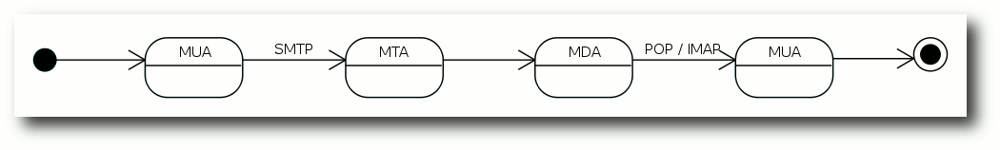Der Weg einer E-Mail vom Sender zum Empfänger. © Polluks (CC-BY-SA-3.0)
{kind=link}
Nach der Theorie die Praxis
Normalerweise fragen Mailserver beim Versenden von E-Mails nach dem vollständigen Namen einer Domain. Da hier keine E-Mail verschickt werden soll, wird mit dem Befehl nslookup nach dem entsprechenden Domainnamen gesucht:$ nslookup -q=mx google.com Server: 192.168.178.1 Address: 192.168.178.1#53 Non-authoritative answer: google.com mail exchanger = 50 alt4.aspmx.l.google.com. google.com mail exchanger = 10 aspmx.l.google.com. google.com mail exchanger = 20 alt1.aspmx.l.google.com. google.com mail exchanger = 30 alt2.aspmx.l.google.com. google.com mail exchanger = 40 alt3.aspmx.l.google.com.Gesucht wird nach dem „Mail Exchange Resource Record“ (MX-Eintrag) der Domain google.com im „Domain Name System“ (DNS), der sich ausschließlich mit dem E-Mail-Dienst (SMTP) beschäftigt. Wie man sieht hat Google gleich mehrere MX-Einträge mit unterschiedlichen Prioritäten, damit bei einem Ausfall der jeweils andere die E-Mails entgegen nehmen kann. Der Eintrag mit dem höchsten numerischen Wert hat meist die niedrigste Priorität. Das nutzen Spammer gerne aus, indem sie sich mit dem Mailserver mit der niedrigsten Priorität verbinden, um Spamfilter zu umgehen, die auf dem Server mit der höchsten Priorität laufen. Laut dem MX-Eintrag ist der Server mit der höchsten Priorität aspmx.l.google.com. Mit dem wird jetzt die Verbindung über Telnet und dem Port 25 für SMTP aufgebaut:
$ telnet aspmx.l.google.com 25 Trying 74.125.39.27... Connected to aspmx.l.google.com. Escape character is '^]'. 220 mx.google.com ESMTP 3si5028908fav.179Was in diesem Fall bei Google klappt, kann bei anderen Mailservern schon schief gehen. Zur Abwehr von Spammern lassen einige Mailserver – zum Beispiel von GMX – eine Verbindung zum Server im MX-Eintrag gar nicht erst zu, wenn die Anfrage über die dynamische IP eines Client-PCs gestellt wird und nicht von einem anderen Mailserver kommt. Es kann aber auch sein, dass der Mailserver aufgrund einer Störung einfach nicht erreichbar ist.
Was einem der Statuscode so sagt
Die letzte Zeile der obigen Ausgabe beginnt mit einer Zahl, nämlich 220. Im SMTP-Protokoll werden Befehle der Reihe nach ausgeführt und jeder Befehl wird mit einem Statuscode beantwortet. Die Beschreibung, die auf den Statuscode folgt, ist für Menschen gedacht und für das Protokoll ohne Bedeutung. Beginnt der Statuscode so wie in diesem Fall mit einer 2, dann war die Bearbeitung erfolgreich, bei einer 3 fehlen noch Informationen und bei einer 5 ist ein Fehler aufgetreten. Als erstes erwartet der Server eine Begrüßung in Form eines HELO, dabei ist es im Prinzip völlig egal, welches Argument man nach dem Befehl einträgt, auch wenn man eigentlich die eigene Domain angeben sollte:helo hi 250 mx.google.com at your serviceDer Statuscode mit der 2 am Anfang zeigt, dass der Befehl erfolgreich bearbeitet wurde und der Server zu Diensten steht. Anschließend gibt man die E-Mail-Adresse des Absenders mit dem Befehl MAIL FROM ein:
mail from: <test.user@googlemail.com> 250 2.1.0 OK 3si5028908fav.179Die spitzen Klammern vor und nach der E-Mail-Adresse sind wichtig. Ansonsten erhält man einen Syntax Error. Als nächstes gibt man einen Empfänger ein, zum Beispiel eine Adresse von der man weiß, dass sie existiert:
rcpt to: <larry.page@google.com> 250 2.1.5 OK 3si5028908fav.179
Gibt es die E-Mail-Adresse wirklich?
Die 250 oben verrät, dass der Befehl erfolgreich war. Die E-Mail-Adresse scheint zu existieren. Doch auch hier gibt es die ein oder andere Falle, die Mailserver Spammern stellen. Manche Mailserver haben ein Catch-All für E-Mails, dann laufen alle E-Mails mit einer formal richtigen E-Mail-Adresse der Domain in der gleichen Mailbox zusammen und der Mailserver antwortet in diesem Fall bei jeder formal gültigen Adresse mit einem „OK“. Vielleicht wird auch eine Graue Liste zur Spambekämpfung eingesetzt. Dabei wird die erste E-Mail von einem unbekannten Absender abgewiesen und erst nach dem nächsten Zustellversuch angenommen. Eine weitere Methode ist das „Sender Policy Framework“ (SPF). Hier schaut der empfangende Mailserver nach, ob die Domain im Befehl MAIL FROM mit dem Argument des Befehls HELO übereinstimmt. Wenn das nicht der Fall ist, kann es gut sein, dass der Rechner E-Mails für diese Domain gar nicht versenden darf. Dadurch soll das Fälschen von Absendern auf SMTP-Ebene erschwert werden. Der nächste Versuch zeigt, dass der Mailserver von Google vermutlich kein Catch-All verwendet:rcpt to: <sandra.fruendt@google.com> 550-5.1.1 The email account that you tried to reach does not exist. Please try 550-5.1.1 double-checking the recipients email address for typos or 550-5.1.1 unnecessary spaces. Learn more at 550 5.1.1 http://mail.google.com/support/bin/answer.py?answer=6596 3si5028908fav.179Auch ohne den Statuscode sieht man, dass hier etwas falsch läuft. Die E-Mail-Adresse existiert laut dem Mailserver nicht. Das kann auch wiederum mehrere Ursachen haben: Entweder ist Frau Fründt eine Externe und gehört nicht zum Unternehmen oder es gibt dort mehr als eine Sandra Fründt oder die Administratoren bei Google halten ein einheitliches Namensschema für E-Mail-Adressen in einem Unternehmen für überbewertet. Ein paar Versuche später wird klar, dass der letzte Punkt zutrifft. Mit dem Befehl QUIT schließt man die Telnet-Sitzung wieder.
Zum Validieren reicht es nicht
Am Ende konnte die – vermutlich – korrekte E-Mail-Adresse von Frau Fründt zusammen mit den hier gesammelten Infos nur durch weiteres Googeln genauer abgeglichen werden. Zur Validierung von E-Mail-Adressen ist das Verfahren aus den oben genannten Gründen somit nur begrenzt geeignet und wäre mit einem Webdienst wie verify-email.org [3] wesentlich schneller gegangen. Im Prinzip lässt sich so eigentlich nur ermitteln, ob zum Zeitpunkt der Abfrage der Mailserver bereit oder in der Lage ist, den Mailversand zu einer bestimmten E-Mail-Adresse durchzuführen. Das kann für die Fehlerdiagnose bei Versandproblemen durch das Mailprogramm sehr hilfreich sein, indem man seinen eigenen oder den Mailserver des Providers testet und dessen Funktionsweise direkt in einer seiner Protokollsprachen SMTP, POP3 oder IMAP überprüft, aber auch zum Testen der eigenen Spamfilter.Bonuslevel: Eine E-Mail über Telnet versenden
Eine E-Mail über Telnet zu versenden ist zwar etwas komplizierter, kann sich aber zum Testen durchaus lohnen [4]. Als Beispiel dient hier der Maildienst von Google, wobei andere E-Mail-Dienst-Anbieter ähnlich funktionieren sollten. Das SMTP-Protokoll wurde aufgrund der zunehmenden Spamproblematik um Verfahren zur Authentifizierung und Verschlüsselung erweitert [5]. Um eine E-Mail zu verschicken, muss man häufig diese Erweiterungen des Mailservers nutzen. Welche aktiv sind, findet man mit dem Befehl EHLO heraus, der für „Enhanced HELO“ steht:$ telnet smtp.googlemail.com 25 Trying 74.125.39.16... Connected to googlemail-smtp.l.google.com. Escape character is '^]'. 220 mx.google.com ESMTP d1sm327505fai.4 helo hi 250 mx.google.com at your service ehlo hi 250-mx.google.com at your service, [89.182.218.152] 250-SIZE 35882577 250-8BITMIME 250-STARTTLS 250 ENHANCEDSTATUSCODESWie man an dem Beispiel gut sehen kann, schweigt sich der Befehl HELO darüber aus, welche Fähigkeiten der Server bei Verschlüsselung, Authentifizierung und so weiter besitzt. Die bekommt man nur als Antwort auf EHLO. Die Ausgabe von STARTTLS zeigt zum Beispiel, dass der Server Verschlüsselung unterstützt.
Codiertes Login
Aufgrund des vermehrten Spamaufkommens verlangen Mailserver heutzutage eine Authentifizierung. Zur Vorbereitung der Authentifizierung und weil man gleich sowieso eine verschlüsselte Verbindung über openssl aufbauen muss, verlässt man den Server jetzt mit dem Befehl QUIT. Die Authentifizierung findet in einer Base64-Kodierung statt. Dazu gibt man im Terminal den Befehl base64 ein und drückt „Enter“. Anschließend folgt der Anmeldename, wieder gefolgt von „Enter“. Um die Eingabe zu beenden, drückt man die Tasten „Strg“ + „D“ und erhält in etwa folgendes Ergebnis:$ base64 test.user@gmail.com dGVzdC51c2VyQGdtYWlsLmNvbQo=Das Passwort wird genauso mit Base64 kodiert. Wenn das erledigt ist, baut man die verschlüsselte Verbindung zum Mailserver mit openssl auf:
$ openssl s_client -starttls smtp -crlf -connect smtp.googlemail.com:25Es folgt eine wirklich lange Ausgabe im Terminal, in der man unter anderem sehen kann, dass Zertifikate ausgetauscht werden. Wenn diese erste Hürde überwunden ist, begrüßt man den Server wieder mit EHLO:
ehlo hi 250-mx.google.com at your service, [89.182.218.152] 250-SIZE 35882577 250-8BITMIME 250-AUTH LOGIN PLAIN XOAUTH 250 ENHANCEDSTATUSCODESNach der Begrüßung folgt das Login mit dem Befehl AUTH LOGIN und dem Base64-kodierten Benutzernamen gleich dahinter:
auth login dGVzdC51c2VyQGdtYWlsLmNvbQo= 334 UGFzc3dvcmQ6Der Statuscode 3 zeigt an, dass der Server noch weitere Infos benötigt. Die Beschreibung, die einen darauf hinweisen soll, was genau noch fehlt, ist übrigens auch Base64-kodiert:
$ base64 -d UGFzc3dvcmQ6 Password:Das heißt, man soll das Passwort eingeben, natürlich Base64-kodiert:
RGFzaXN0R2VoZWltCg== 235 2.7.0 Accepted
Sender und Empfänger
Nach der Eingabe des Base64-kodierten Passworts wird die E-Mail geschrieben. Mit den Befehlen MAIL FROM und RCPT TO werden Sender und Empfänger der E-Mail festgehalten:mail from: <test.user@gmail.com > 250 2.1.0 OK l22sm324987fam.37 rcpt to: <empfaenger@beispiel.net> 250 2.1.5 OK l22sm324987fam.37Wichtig ist, dass die E-Mail-Adressen in spitzen Klammern stehen. Man kann RCPT TO auch mehrmals benutzen, wenn man die E-Mail an weitere Empfänger versenden möchte. Der Befehl DATA gibt an, dass jetzt die E-Mail folgt. Zu Beginn gibt man der E-Mail beliebige Kopfzeilen mit, wobei Absender, Empfänger und Betreffzeile hier am sinnvollsten sind. Welche Adressen man in den Kopfzeilen einträgt, ist egal, es können ganz andere sein, als die, die in den Befehlen MAIL FROM und RCPT TO weiter oben eingetragen wurden. So einfach kann man Absender fälschen.
data 354 Go ahead l22sm324987fam.37 From : Test <test.user@gmail.com> To: Empfaenger <empfaenger@beispiel.net> Subject: Hier kommt eine Testmail Hallo Empfaenger, hier kommt eine Testmail. Viele Gruesse.Wenn der Text fertig ist, beendet man den Befehl DATA mit einem einzelnen Punkt in einer separaten Zeile. Nach der Bestätigung der Eingabe durch den Mailserver ist die E-Mail verschickt und man verlässt Telnet wieder über den Befehl QUIT. Links
[1] http://de.wikipedia.org/wiki/Telnet
[2] http://www.youtube.com/watch?v=anwy2MPT5RE
[3] http://wiki.ubuntuusers.de/Mailserver_testen
[4] http://www.linux-magazin.de/Heft-Abo/Ausgaben/2002/04/Transport-Sicherung
| Autoreninformation |
| Christian Imhorst (Webseite) hat bis heute keine Reaktion auf seine E-Mail an Frau Fründt erhalten. Durch eine weitere Recherche mit Google hat er mittlerweile auch ihre Handy-Nummer, die auf einer einsam gelegenen Seite von Google selbst gleich neben ihrer Jobbezeichnung und ihrer E-Mail-Adresse steht. Vielleicht schreibt er ihr mal eine SMS, um nachzufragen, ob seine E-Mail auch wirklich bei ihr angekommen ist, sobald er herausgefunden hat, wie man das über die Kommandozeile macht. |
Zum Index
Perl-Tutorium: Teil 2 – Literale, Arrays und Blöcke
von Herbert Breunung Während der vorige Teil dieses Tutoriums zu einer Hälfte aus Vorbereitungen bestand und die andere Hälfte auf ein kleines Programm hinarbeitete, wird dieses Mal nur noch programmiert. Dies bedeutet aber nicht, dass wesentlich mehr Befehle auswendig zu lernen sind, sondern dass der Student mehr von der Syntax begreifen lernt: Was eigentlich ein Punkt oder Komma macht, wo man Klammern setzt und was der Unterschied zwischen den runden und den geschweiften Klammern ist. Da „Syntax begreifen“ auch das Wissen umfasst, was wann angebracht ist, wird damit begonnen, die Vor- und Nachteile von Alternativen abzuwägen. Dazu gehört es auch, sein Programm stets fit zu halten. Gerade weil das Projekt praxisnah stetig wächst, kann dabei gezeigt werden, worauf man frühzeitig achten sollte, damit die Freude beim Programmieren nicht vergeht. Doch bevor die Lektion beginnt, würde vielleicht etwas Wiederholung gut tun, es sei denn, alle der folgenden Befehle, Operatoren und Zeichen können selbstständig und mit eigenen Worten erklärt werden: use print say my our undef open read readline getc eof close chomp chdir$ < > = ; # Auch die erwähnten Pragmata und Module sollten nicht der Vergessenheit anheimfallen: strict warnings diagnostics utf8
FindBin File::Slurp IO::All Wem dies nichts mehr sagt, sollte sich am besten noch einmal Teil 1 des Tutoriums aus freiesMagazin 08/2011 [1] vornehmen.
Lösung der Aufgabe
Zur Festigung wurde letztes Mal aufgetragen, einen kleinen Anfang des Notizprogramms zu schreiben. Deshalb heißt es jetzt: „Editoren raus, Hausaufgabenkontrolle!“ Streng wird es jedoch nicht, da die Aufgabe sich sehr vielfältig lösen lässt und nur die eigene Zufriedenheit mit dem Programm zählt, das selbstverständlich ohne Fehler oder Warnungen laufen sollte. Die kürzeste und klarste Lösung ist wohl:
use v5.12;
use warnings;
use FindBin;
use File::Slurp;
chdir $FindBin::Bin;
say read_file('notizblock.txt');
print "Neue Notiz: ";
my $notiz = <STDIN>;
append_file
( 'notizblock.txt', $notiz );
use ist bereits bekannt. Das Programm verlangt mindestens Version
5.12.0, warnt auch vor möglichen Problemen. Weiterhin wird die
Information benötigt, in welchem Verzeichnis das Skript läuft,
für das das Modul FindBin benutzt wird. File::Slurp stellt die
Befehle read_file und append_file bereit, mit deren Hilfe Dateien
einfach gelesen und geschrieben werden können.
Als erstes macht chdir das Skriptverzeichnis zum
Arbeitsverzeichnis, damit die Datei mit den gespeicherten Notizen
gefunden werden kann. Diese liest read_file ein und say gibt
deren Inhalt sofort über das Terminal aus. print bringt die
Aufforderung, die nächste Notiz einzugeben. Die liest <STDIN>,
und das Gleichheitszeichen = legt sie in $nachricht ab.
append_file öffnet die Datei erneut am Dateiende und hängt die
Nachricht dort an.
Wer noch eine Notiz eingeben will, startet bn
(im letzten Tutorial angelegter Alias) noch einmal.
Dieses Programm war knapp, verständlich und eine sehr gute Lösung,
wäre die Benutzung von File::Slurp erlaubt. Denn wenn es einmal
komplizierter wird (einzelne Bytes auslesen) oder nicht die ganze
Datei benötigt wird, muss man auf open, read und close
zurückgreifen, was wenigstens einmal geübt werden sollte.
use v5.12;
use warnings;
use FindBin;
chdir $FindBin::Bin;
open my $FH, '+<',
'notizblock.txt';
say do { local $/; <$FH> };
print "Neue Notiz: ";
my $notiz = <STDIN>;
print $FH $notiz;
Der erste „Trick“ weshalb diese Fassung kaum länger ist: Die Datei
wird im Lese- und Schreibmodus (+<) geöffnet. Nachdem sie
vollständig gelesen wurde und der Zeiger mit der Lese- oder
Schreibposition am Ende der Datei steht, fügt jedes Schreiben
(letzte Zeile) etwas an. Die eigentliche Nuss steckt jedoch in
Zeile 8, die jetzt erklärt wird.
Blöcke und Spezialvariablen
Ein Paar geschweifte Klammern und die darin enthaltenen Befehle (durch ein Semikolon ; getrennt) nennt man Block. Solche Blöcke sind Programmteile, die nur bei Bedarf oder wiederholt ausgeführt werden. Mit einem do vor dem Block wird dieser nur einmalig und sofort abgearbeitet und das Ergebnis, meist das Ergebnis des letzten Befehls im Block, kann genutzt werden. Im Listing oben bekommt das do ein say zur Ausgabe. Die eigentliche Magie passiert aber in dem Block. Variablen wie $/ werden tatsächlich oft als magisch bezeichnet, weil sie das Verhalten von Perlbefehlen ändern und auch ihr etwas seltsames Äußeres trägt zu dieser Bezeichnung bei. Statt $/ könnte man genauso gut $INPUT_RECORD_SEPARATOR oder $RS schreiben, aber dazu müsste man use English; zufügen. Das Modul English stellt, getreu seinem Namen, den magischen Variablen einen englischen Alias zur Seite. Dazu sind jedoch viele Programmierer zu bequem oder sie tolerieren die damit verbundenen Geschwindigkeitseinbußen nicht, die sich allerdings mit use English '-no_match_vars'; umgehen lassen. Der Kürze wegen verzichtet das Beispiel jedoch darauf. <$FH> liest eine Zeile aus der geöffneten Datei. Doch woher weiß Perl wo die Zeile endet? Am Zeichen, welches das Zeilenende markiert. Da es nicht sichtbar ist, schreibt man \n (Das n steht für „newline“, zu deutsch „neue Zeile“). Dieses \n ist normalerweise der Inhalt von $/. Es wird von < > (readline) benutzt und chomp entfernt immer nur die Zeichen, die sich in $/ befinden. In dem kleinen Block wird $/ entleert, sodass < >, ohne ein Zeilenende erkennend, die gesamte Datei bis ans eof (Dateiende) einliest. Um andere < >-Operationen nicht zu beeinflussen, sollte diese Änderung von $/ nur in diesem Block wirksam sein. Alle Spezialvariablen sind nämlich von Hause aus global, d. h. im gesamten Perl-Slript bekannt. Um dies einzuschränken ist das Wort local da. Es ist der weniger strenge Vorläufer von my (genaueres dazu folgt in einem späteren Tutorium), der $/ bis zum Ende des Blocks mit einem anderen Wert (undef da nichts zugewiesen) überschreibt. Magische Variablen haben meist recht logische Namen (perldoc perlvar hilft), ihre Form gibt fast immer einen Hinweis auf ihre Bedeutung. Der Schrägstrich (Slash) in $/ deutet eine geöffnete Klappe an, in die sich etwas von oben hineinschütten lässt. Die Benutzung der Spezialvariablen, sollte jedoch auf ein Minimum beschränkt werden und in Produktivcode sind die Kurzformen gänzlich zu vermeiden.Kontext
Doch auch das aktuelle Programm kann verbessert werden. $nachricht wird nur einmal gefüllt und gleich danach nur einmal gebraucht. Könnte man nicht auch print $FH <STDIN>; schreiben? Beinahe, es müsste richtig lauten:print $FH scalar <STDIN>;Was scalar tut, könnte manchen dämmern, da bereits bekannt ist, was skalare Variablen sind. Deutschlehrer sagen Singular dazu, das Gegenteil von Plural (Mehrzahl). Es beschreibt nämlich, dass <STDIN> nur einen Wert liefern soll. Würde man es weglassen, passierte etwas ungemein Heimtückisches. print erwartet eine Mehrzahl an Werten, die es hintereinander ausgibt. Das folgende < > bekommt das mit und erfüllt diese Forderung gerne. Ungünstig ist nur, dass der Begriff „Mehrzahl“ kein Ende definiert. Der Nutzer würde eine Notiz nach der anderen eingeben, ohne jemals weiter zu kommen. Was an dieser Stelle nach böser Falle aussieht, ist sonst eine Quelle von Perls großer Macht. Das Prinzip nennt sich Kontext oder auch Kontextsensitivität und bedeutet, dass einzelne Befehle den Ton angeben (den Kontext bestimmen) und der Rest versucht seine Ergebnisse anzupassen. Wegen dieses Prinzips konnte ein Plus (+) seine Summanden in Zahlen umwandeln lassen.
Automatisches close
Weil Perl so viel Freiheit und integrierte Intelligenz bereitstellt, fordert es den Programmierer auf, seine Absicht genau auszudrücken. Das vorgestellte Beispiel war auf Kürze optimiert und jeder fähige Coder versteht es auch. Aber größere Programme sollten vor allem robust sein. Damit ist gemeint, dass man es leicht ändern kann, ohne dass sofort das halbe Programm aufhört zu arbeiten. Das heißt manchmal auf clevere Kniffe zu verzichten und in diesem Fall das close $FH; dazu zu schreiben, auch wenn das Dateihandle automatisch am Ende geschlossen wird. Was gute Programmierer auch ausmacht: Sie planen jede Möglichkeit ein. Wenn keine notizblock.txt vorhanden ist, dann wirft das bisherige Programm:readline() on closed filehandle $FH at bn.pl line 8Das war zwar nur eine Warnung (kein Abbruch) aber der Rest des Programms funktioniert nicht. Willkommen im Alltag! Das Handle in $FH wurde für „zuerst lesen, dann schreiben“ initialisiert. Aus einer nicht vorhandenen Datei kann nichts gelesen werden. Daher die Fehlermeldung. Und da nichts gelesen wurde, kann später auch nicht mit dem Handle geschrieben werden (zweite Meldung). Menschen, die schon etwas Perl kennen, schreiben deshalb so etwas wie:
open( ... ) or die "Keine notizblock.txt vorhanden";Selbst wenn man nicht weiß, was genau das logische Oder (or) macht, kann man es sich doch denken, denn es liest sich wie ein (englischer) Satz: „Öffne die Datei oder stirb.“ Genau das tut es auch, wobei die einfach ein anderer Name für print STDERR "Nachricht", verbunden mit dem Programmabbruch, ist. STDERR ist das Handle der Standardfehlerausgabe. Meist ist daran ebenfalls die Shell gebunden wie bei STDIN und STDOUT. In letzter Zeit hat es sich aber durchgesetzt use autodie; zu schreiben. Durch dieses Pragma sterben die Programme automatisch, wenn Befehle wie open Probleme haben, und die dabei entstehenden Fehlermeldungen sind weit informativer als das, was sich Programmierer meist einfallen lassen. Da „Gib ein Bier oder stirb!“ der einzige Weg ist, in einer klingonischen Bar seinen Durst zu löschen, bekam autodie den Beinamen des klingonischen Programmierstils. Weil ein Tod nur hilft, einen Konflikt schneller zu erkennen, ihn aber nicht löst, wäre es besser, mit einem Handle anhängend auf die Datei zuzugreifen und das Handle mit dem nächsten Befehl wieder zu schließen. Dies verändert die Datei nicht, würde im Falle der Nichtexistenz aber eine leere Datei anlegen. Sicherlich täte der aus Perl einfach aufrufbare Unix-Befehl touch dasselbe, aber die Anwendung soll ja auch unter Windows laufen.
{ open my $FH, '>>',
'notizblock.txt' }
Der Befehl im Block wird normal ausgeführt. Ohne do verzichtet man
einzig auf das Ergebnis von open. Nur die Variable $FH wird
wegen des my mit der schließenden Klammer gelöscht, als wenn es
sie nie gegeben hätte. Davor wird mit dem darin enthaltenen Handle
ein close ausgeführt. Gäbe es noch eine zweite Variable $FH vor
der öffnenden Klammer, sie wäre von all dem unberührt. Lediglich ab
dem my $FH lässt sich im inneren Block mit $FH einzig auf die
neue, „innere“ Variable zugreifen.
Guter, trockener Code
Erfahrene Programmierer hätten vielleicht ein Problem damit, dass der Dateiname zweimal auftaucht. Sie würden den Dateinamen am Programmanfang in eine Variable geben und diese anstatt des Names verwenden.
...
my $datei = 'notizblock.txt';
chdir $FindBin::Bin;
{ open my $FH, '>>', $datei; }
open my $FH, '+<', $datei;
...
Das mag etwas übertrieben wirken, hat aber drei wichtige Gründe:
- Man sollte Dopplungen vermeiden, wo es geht. Durch das Befolgen des DRY-Prinzips („dry“ heißt auf deutsch „trocken“ und steht für „don't repeat yourself“) werden Programme wesentlich leichter änderbar. Sollen die Notizen später in einer anderen Datei gespeichert werden, braucht der Autor nur eine Stelle ändern anstatt zwei.
- Der Autor muss die Stelle nicht suchen, da sie am Anfang ist.
- Gute Variablennamen machen den Quellcode verständlicher als zufällige Daten im Code.
Bedingte Ausführung und Dateitests
Optimal wäre es, den kleinen Block mit dem open nur dann auszuführen, wenn die Datei wirklich fehlt. Der dafür zu gebrauchende Befehl lautet in fast allen Sprachen if („wenn“). Dem folgt die Bedingung in runden Klammern. Wird die Bedingung als „wahr“ ausgewertet (Ergebnis nicht leer, 0 oder undef) wird der darauf folgende Block ausgeführt. Perl kennt auch noch ein unless, das den Block ausführen lässt, wenn die Bedingung „unwahr“ ist. Das Prüfen, ob die Datei vorhanden ist, geht in Perl sehr einfach. Dazu gibt es die Dateitestoperatoren, welche sich am Unix-Kommandozeilenprogramm test orientieren und mit einem Minus - beginnen. Die Prüfungen orientieren sich meist am ersten Buchstaben dessen, was geprüft wird. Auf die Existenz der Datei wird im Beispiel mit dem Operator -e getestet:
unless (-e $datei)
{ open my $FH, '>>', $datei; }
Wenn der Block nur einen Befehl enthält, kann man auch eine andere
Schreibweise wählen. Die nennt sich „nachgestellt“, weil hier das if
oder unless nach dem Befehl steht:
open my $DH, '>>', $datei unless -e $datei;Dabei lassen sich nicht nur die geschweiften, sondern auch die runden Klammern um die Bedingung weglassen. Einen Unterschied gibt es nur für die Variable, die jetzt einen größeren Geltungsbereich hat. Der Aufruf open ist nicht mehr in einem Block { } eingeschlossen. Deshalb muss das my im folgenden Befehl entfernt werden, da deren Geltungsbereich schon bestimmt wurde. Oder man wählt zwei verschiedene Variablennamen. Sowohl das zweimalige Öffnen einer Datei mit einem Handle, als auch das Öffnen einer Datei mit zwei Handle ist in Perl vorgesehen. Mit seek lässt sich sogar die aktuelle Lese- und Schreibposition versetzen, die tell $handle; einem mitteilt. Mehr dazu sagt die perldoc, wenn sie gefragt wird (Erklärung einer function – eines Perl-Befehls):
$ perldoc -f seek $ # Dokumentation fuer ein Modul $ perldoc File::Slurp $ # unter Unix geht das auch $ man File::SlurpIn den nächsten Abschnitten wird wieder File::Slurp verwendet. Es macht das Programm klarer und reicht vom Funktionsumfang bis mindestens Teil 4 dieses Tutoriums völlig aus, da jede Nachricht eine Zeile belegt. Weil Enter die Eingabe abschließt, können die Zeilenumbrüche nur am Ende jeder Notiz stehen. Dann muss man die Zeilenabbrüche \n auch nicht mit chomp entfernen, sondern kann sie gleich mit speichern.
Die üblichen Vergleiche
Sobald das Programm zwei-, dreimal verwendet wurde fällt auf, dass eine Nachricht bei jedem Aufruf eingegeben werden muss. Oft dient ein Notizblock jedoch nur der Erinnerung. Deshalb sollte man die Eingabe abbrechen können, sodass nichts gespeichert wird.say read_file($datei) if -e $datei; print "Neue Notiz: "; my $notiz = <STDIN>; append_file($datei, $notiz) if $notiz ne "\n";Um Texte zu vergleichen, nimmt man die Operatoren eq (kurz für „equal“, d. h. „gleich“) oder ne („not equal“ – „ungleich“). Die letzte Zeile liest sich somit wie ein englischer Satz: „Füge an die $datei die $notiz, wenn die $notiz nicht nur aus dem Zeilenende besteht“. Mögliche Alternativen wären auch unless $notiz eq "\n" oder if not $notiz eq "\n" (das Wörtchen not verneint eine Aussage). So wie das Plus (+) erwartete (erzwang), dass beide Operanden (die Werte links und rechts) Zahlen sind, so erzwingen die Operatoren eq und ne den Stringkontext (Text). Es gilt die Faustregel: Sind es Symbole oder Formelzeichen, geht es um Zahlen; besteht der Operator aus Buchstaben, geht es auch um Buchstaben. Zahlen vergleich man mit == und da <> anderweitig im Gebrauch ist, wird Ungleichheit mit != geprüft. Das ist insoweit logisch, da ein Ausrufezeichen ! fast immer das Gegenteil ausdrückt (wie not auch). Die Regel befolgend beziehen sich <, <=, >, >= nur auf Zahlen. Wörter lassen sich alphabetisch sortieren. < prüft ja nur ob zum Beispiel die 3 vor der 4 am Zahlenstrahl steht. Da dem so ist, gibt 3 < 4 oder "3" < "4" einen positiven Wert (meist 1). Auf Englisch spricht man das < „lower than“ aus. Deswegen ist lt identisch zu <, nur auf Text bezogen: 'a' lt 'b' ist auch wahr. Dies lässt sich jetzt analog fortführen: „lower equal“ (kleiner gleich) wird zu le, „greater than“ zu gt, „greater equal“ zu ge. perldoc perlcheat zeigt einen Spickzettel, auf dem solche Dinge übersichtlich zusammengefasst sind. Den dort auf ge folgenden, sehr nützlichen Raumschiffoperator für Vergleiche erklärt der nächste Teil.
Zahlen
Zahlen müssen nicht in Anführungszeichen gestellt werden, da Perl auch ohne sie ermittelt, wo sie anfangen und aufhören. Sie bestehen ja lediglich aus den zehn Ziffern und ein wenig mehr. Es könnte ein Minuszeichen davor stehen. Wobei das - auch als Operator negieren kann, also - 5 und -5 ergeben das Gleiche. Der Punkt ist das Komma für gebrochene Zahlen, da Kommata in Perl (und vielen anderen Sprachen) für Aufzählungen von Werten (Listen) da sind. Aber Obacht, der Punkt ist auch der Operator der Zeichenketten verbindet:'der ' . 'Hirsch' # entspricht 'der Hirsch' 4 . 5 # '45', Verkettung von Text 4 .5 # '45', auch hier ist . # Stringoperator 4. 5 # Fehler 4.5 # 4,5 4.0 . 's' # '4s'Zahlen dürfen Unterstriche enthalten (1_000_000). Perl ignoriert sie, weil sie nur der Lesbarkeit dienen. Wie bei Taschenrechnern schreibt sich die Million auch als 1e6, weil es 1 mal 10 hoch 6 ist (1*10**6). Wer in Mathe aufgepasst hat, weiß jetzt auch, dass ein Hundertstel identisch zu 1E-2 sind. Das e steht für „Exponent“ und darf klein oder groß geschrieben werden.
4 == 4.0 # wahr, denn 4 ist 4 4 eq 4.0 # wahr, weil 4.0 zu 4, # dann '4' wird 4 eq '4.0' # falsch, weil '4' und # '4.0' nicht der selbe Text istDa Rechner keine 10 Finger haben, können sie nur bis 1 zählen und rechnen deswegen mit 0 und 1. Für sie ist eine Million 0b11110100001001000000. Beginnt in Perl eine Ziffernfolge mit 0 (Null) ist das ein Signal: Achtung, die Zahl ist nicht dekadisch kodiert (Zehnersystem wie in der Schule) sondern oktal. In diesem System kommt nach der 7 die 10 (Zählwert 8), weil die Ziffern nur bis 7 gehen. 0b (Null und klein b) ist der Vorsatz für binäre Zahlen (zwei Ziffern) und 0x der für hexadezimale Zahlen .
Textangaben
Im letzten Beispiel war es sehr wichtig, doppelte Anführungszeichen um "\n" zu legen. damit die spezielle Notation \n als Zeilenumbruch interpretiert werden kann. Neben doppelten Anführungszeichen gibt es auch noch einfache Anführungszeichen (Hochkommata). Diese einfachen Anführungszeichen nehmen alles wörtlich, was zwischen ihnen steht, es gibt aber zwei Ausnahmen. Um auch mal ein Hochkomma im Text vorkommen zu lassen, wird ihm ein Backslash \ vorangestellt. Das nennt man „escapen“ [2]. Auf deutsch: Das Zeichen wird durch ein zusätzliches Zeichen seiner sonstigen Bedeutung enthoben.say 'hab\'s kapiert';In der Shell erscheint hab's kapiert. Aber wie schafft man es, wenn in einem Tutorium zeichengetreu hab\'s kapiert zur Anschauung ausgegeben werden soll? Dann wird das Escape-Zeichen wiederum „escaped“:
say 'hab\\\'s kapiert';Die doppelten Anführungszeichen können (wie es ihre Form andeutet) wesentlich mehr. In ihnen werden \n und die anderen Escape-Sequenzen gegen unsichtbare Steuerzeichen ausgetauscht und auch Variablen, die man dort einfügt, werden durch ihren Inhalt ersetzt. Evaluieren heißt das in der Fachsprache. Neben “ und gibt es noch die Backticks ``. Was in sie gestellt ist, wird sofort ausgeführt (wie in der Shell, deren Ausgabe (STDOUT) das Ergebnis ist). Das war vorhin mit der Aussage „touch ausführen“ gemeint. Backticks interpretieren ebenfalls Variablennamen und Steuerzeichennotationen wie \n ähnlich den doppelten Anführungszeichen. „Quoten“ (in Anführungszeichen oder Ähnliches setzen) ist in Perl ein breites Feld, über das noch berichtet wird. Als Grundlage reicht das hier vermittelte Wissen jedoch erst einmal.
Arrays
Zurück zum Notizprogramm. Endlich ist es solide, aber der Funktionsumfang ist noch dünn. Was jetzt am dringendsten fehlt, ist eine Möglichkeit, Nachrichten zu löschen. Am besten einzeln natürlich. Später könnte man noch die Reihenfolge ändern. Dazu müsste man jede Zeile in eine andere Variable geben ($notiz1, $ notiz2, usw.), aber eigentlich gehören diese ganzen Variablen zusammen. Beim Speichern in die Datei lässt sich auf dem Weg kaum bestimmen, welche Variablen dazugehören. Die ganze Liste an Notizen sollte am besten in einer Variable deponiert sein. Dann fragt man nur nach dem Wert Nummer 1, dem letzten oder allen Werten. So geht es auch, nur dass Arrays bei 0 anfangen zu zählen (wie dieses Tutorium), also das Feld Nummer 1 den zweiten Wert enthält. Array-Variablen beginnen mit der Sigil @ („at“ genannt; das „a“ steht für Array). So lassen sie sich leicht unterscheiden und man kann @notiz und $notiz haben. Larry Wall sieht das $ als Zeichen für Einzahl und @ als Zeichen für Mehrzahl an, so wie im deutschen die Endung „en“. Wenn man das weiß, wird auch klar, wieso man $notiz[0] schreiben muss, wenn man die erste Nachricht aus @notiz haben will und wieder @notiz[0,1] wenn die erste und zweite Nachricht interessiert. Das Füttern der Arrays ist denkbar einfach:
my @ziffern = (0, 1, 2, 3, 4, 5, 6, 7, 8, 9);
my @ziffern = (0 .. 9); # das Gleiche kuerzer
# dank dem Rangeoperator ..
my @farben = ('rot', 'blau', 'gruen', 'gelb');
my @farben = qw(rot blau gruen gelb); # kuerzer
Runde Klammern umfassen ein Array, auch das Array an Werten, die
einem Befehl gegeben werden. Dort kann man sie aber oft weglassen,
und sie werden nur geschrieben, um klar zu stellen, wo das Array
endet. qw („quote words“, setze von Leerzeichen oder Tabulatoren
getrennte Wörter in Anführungszeichen) ist schon praktisch, aber im
Moment drängt eher die Frage: Wie trennt man den Dateiinhalt in
einzelne Zeilen? Wer genau aufgepasst hat, ahnt vielleicht, dass
read_file mitbekam, dass say ein Array an Werten erwartete und
es auch lieferte.
if (-e $datei) {
my @notizen =
read_file( $datei );
print @notizen;
}
print "Neue Notiz (nur Enter wenn
keine): ";
my $notiz = <STDIN>;
append_file($datei, $notiz)
if $notiz ne "\n";
Über Arrays iterieren
Schöner wäre es, wenn vor jeder Nachricht die Nummer stünde, sodass der Nutzer entscheiden kann, welche Nachricht gelöscht werden soll. Dazu braucht es eine Schleife. Damit sind weder Knoten noch Rennkurven gemeint, sondern Blöcke, die mehrmals ausgeführt werden. Wie oft die Schleife durchlaufen wird, entscheidet entweder eine Bedingung wie bei if (dazu nächstes Mal mehr) oder man wählt die for-Schleife. (Man kann auch auch foreach schreiben.) In die runden Klammern nach for kommt ein Array oder eine Liste an Werten. Der darauffolgende Block wird für jeden Wert der Liste einmal ausgeführt und die sogenannte Laufvariable hat bei jeder Runde als Inhalt diesen Wert.
for my $notiz (@notizen) { print $notiz; }
Achtung: Auch wenn die Definition von $notiz vor dem Block
geschieht, gibt es die Variable nur innerhalb des Blocks.
Gesucht waren aber auch die Nummern der Notizen. Also sollte
man die Nummern hochzählen und mit der Nummer bekommt man per $notizen[$nr] auch die zugehörige Notiz. Zum Glück weiß jedes
Array, wie viele Elemente es hat. Im skalaren Kontext verrät es das
oder man lässt sich mit $#notizen die Nummer des letzten Elements
geben, was eins weniger als die Gesamtzahl ist. Mit diesem Wissen wird
Folgendes möglich:
for my $nr (0 .. $#notizen)
{ print "[$nr]", $notizen[$nr] }
Die ersten eckigen Klammern bei print sind nur Dekoration für die
Aufzählung. Und natürlich kennt Perl eine kürzere Version dieser
Zeile. Wenn keine Laufvariable benannt wird, gibt es eine
Spezialvariable, welche diese Aufgabe übernimmt. $_ ist die
absolut prominenteste Spezialvariable. Wie andere Prominenz auch,
bestimmt sie gerne das Thema. Wenn einmal
das Gesprächsthema steht
(z. B. der Reliable Replacement Warhead), möchte man es nicht jedes
mal aussprechen. Man benutzt einen Pronom oder lässt sogar das
weg. Perl funktioniert auch hier wie eine natürliche Sprache. Wenn
Befehle wie
print gar keine Parameter/Daten
bekommen, schauen sie, was $_ anbietet.
Deshalb wirkt
for my $notiz (@notizen) { print $notiz; }
identisch zu
for (@notizen) { print }
was in der nachgestellten Form so aussieht:
print for @notizen;die ebenfalls implizit, d. h. von außen nicht sichtbar, $_ benutzt. Im aktuellen Fall ist $_ sichtbar, da die Laufvariable mehrfach angewendet wird, bevor der auszugebende Text steht.
print "[$_] ", $notizen[$_] for 0 .. $#notizen ;
Neue Aufgabe
Um das Niveau der „Hausaufgabe“ etwas zu heben, ein Hinweis vorab: Um Werte aus dem Array zu löschen, braucht es den Befehl splice. delete funktioniert an bestimmten Stellen nicht so, wie Anfänger es sich vorstellen. Selbstständiges Nachschlagen in der Dokumentation sollte jeder können, der sich Programmierer nennen will. Und wer daran Gefallen findet, darf auch das Verschieben der Notizen implementieren.Ausblick
Im nächsten Teil des Tutoriums gibt es mehr zu Schleifen, mehr zu Arrays und der dritte Variablentyp (neben Skalaren und Arrays) wird vorgestellt. Auch Subroutinen (manche nennen auch sie Funktionen oder Prozeduren) werden ein Thema sein, um das Programm verständlich und leicht änderbar zu halten. Links[1] http://www.freiesmagazin.de/freiesMagazin-2011-08
[2] http://de.wikipedia.org/wiki/Escapen
| Autoreninformation |
| Herbert Breunung (Webseite) ist seit sieben Jahren mit Antworten, Vorträgen, Wiki- und Zeitungsartikeln in der Perlgemeinschaft aktiv. Dies begann mit dem von ihm entworfenen Editor Kephra, den er leidenschaftlich gerne pflegt. Daneben beschäftigt er sich hauptsächlich mit wxPerl und Perl 6. |
Zum Index
i3 – ein Tiling Fenstermanager
von Robert Knauer Fenstermanager gibt es viele, die bekanntesten sind wohl Metacity (GNOME 2), KWin (KDE) oder Compiz. Diese Fenstermanager verfolgen alle ein ähnliches Konzept: Die Fenster liegen relativ ungeordnet auf dem Bildschirm und können überall hin verschoben werden. Tiling Fenstermanager, wie i3 [1], bauen auf einem anderen Konzept auf: Diese behandeln den Bildschirm wie eine Art Tabelle. Dadurch sind die Fenster (bis auf Ausnahmen) an einem festen Platz und können durch Tastenkombinationen in andere Positionen gebracht werden. Was zuerst seltsam klingt, entpuppt sich bei genauerem Hinsehen und Einarbeiten als praktisch und zeitsparend. Auch die oft wenig benutzten Arbeitsflächen, die auch bei anderen Fenstermanagern vorhanden sind, nutzt man so viel intensiver. Für den folgenden Artikel sollte man Konfigurationsdateien editieren können und kein Problem mit Manpages haben. Unter manchen Distributionen (z. B. Fedora, openSUSE, Linux Mint) ist auch das Kompilieren von Programmen nötig. 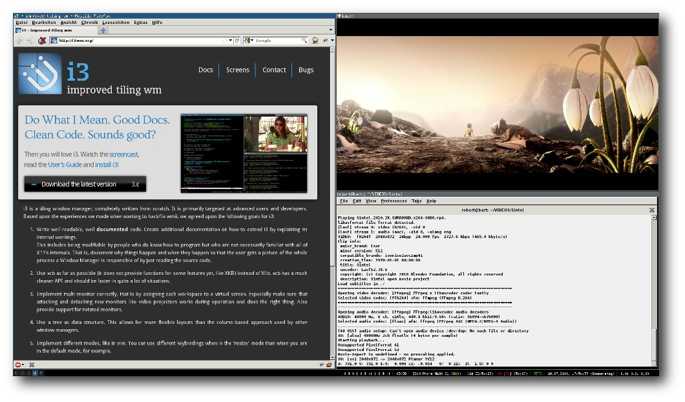i3 im Einsatz mit Firefox, ROXTerm und MPlayer.
Das Konzept
Bei i3 läuft fast alles über Tastenkombinationen ab, auf eine Maus kann man bei der Steuerung von i3 verzichten. Konfiguriert wird der Fenstermanager nicht über eine grafische Oberfläche sondern einzig und allein über eine Konfigurationsdatei. Fenster, die man in den Floating Mode versetzt hat, verhalten sich genau wie bei einem gewöhnlichen Fenstermanager. Sie lassen sich mit der Maus beliebig vergrößern, verkleinern und auch verschieben. Fenster, die nicht im Floating Mode sind, ordnen sich automatisch so an, dass sie den Platz optimal ausnutzen.Die Installation
Der Fenstermanager ist in den Paketquellen von Ubuntu, Debian und Arch Linux vorhanden. Bei anderen Distributionen, wie z. B. Fedora, openSUSE oder Linux Mint muss man i3 und auch i3lock und i3status (falls benötigt, darauf wird später noch eingegangen) selbst kompilieren. Wer einen Login-Manager wie xdm, gdm oder kdm verwendet, sollte nach der Installation eine entsprechende Auswahlmöglichkeit vorfinden. Ohne Login-Manager reicht der Eintrag exec i3 in der Datei ~/.xinitrc aus. Zusätzlich muss dmenu installiert werden. Es wird zum Starten von Anwendungen in i3 verwendet und ist ebenfalls in den meisten Paketquellen vorhanden.Die Grundlagen
Um ein Programm zu starten, drückt man „Alt“ + „V“ (in der Standardkonfiguration). Dadurch öffnet sich am oberen Bildschirmrand dmenu, in das man ein Shellkommando eintippen kann, in diesem Fall den Namen eines Terminals (beispielsweise xterm, roxterm oder gnome-terminal). Es öffnet sich ein Fenster, das nicht mit der Maus verschiebbar ist und den ganzen Bildschirm ausfüllt. Es ist fokussiert, erkennbar am blauen Fensterrahmen. Dieses Fenster wird nun mit „Alt“ + „Umschalt“ + „Leertaste“ in den Floating Mode versetzt. Das Terminal ist nun ein kleines Fenster in der linken oberen Ecke, das mit „Alt“ + „Umschalt“ + „Leertaste“ wieder in den normalen Tiling Modus versetzt wird. 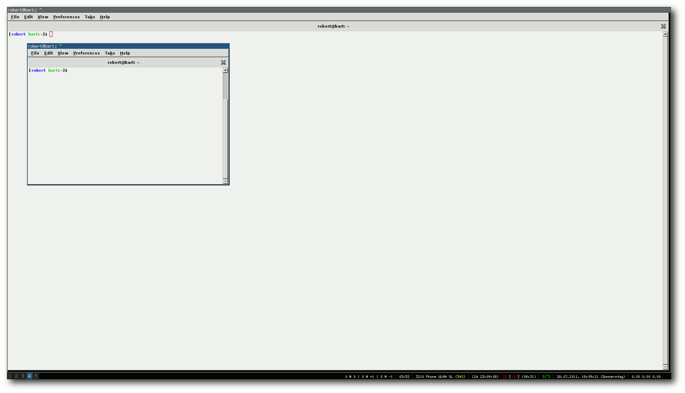Ein Terminal im Floating Mode (fokussiert) über einem Terminal im normalen Tiling Mode.
Nachdem das Fenster wieder den ganzen Bildschirm ausfüllt, wird ein weiteres Fenster geöffnet („Alt“ + „V“). Es erscheint unter dem anderen Fenster und nimmt nun den halben Bildschirm ein. Wenn man das untere Fenster mit der Maus fokussiert und „Alt“ + „Umschalt“ + „Pfeil rechts“ drückt wird der Bildschirm vertikal geteilt, das untere Fenster ist nun rechts. Anstatt den Fokus mit der Maus zu wechseln können dazu auch die Tastenkombinationen „Alt“ + „Richtungstaste“ verwendet werden. Wenn man nun das rechte Fenster fokussiert und „Alt“ + „Umschalt“ + „ Pfeil runter“ drückt nimmt nun jedes Fenster ein Viertel des Bildschirms ein. Jetzt soll das linke obere Fenster die ganze Bildschirmbreite einnehmen, das rechte untere Fenster jedoch so bleiben. Dazu wird das obere Fenster fokussiert und „Alt“ + „Strg“ + „Pfeil rechts“ gedrückt. Um die Aktion wieder rückgängig zu machen drückt man „Alt“ + „Umschalt“ + „Pfeil links“. Um die Fenster wieder zu schließen, fokussiert man sie und drückt „Alt“ + „Umschalt“ + „Q“. Eine weitere wichtige Eigenschaft von i3 sind die Arbeitsflächen. Es stehen 10 davon zur Verfügung. Zwischen ihnen kann man mit „Alt“ + „Nummer“ (0-9) umschalten, ein fokussiertes Fenster kann man mit „Alt“ + „Umschalt“ + „Nummer“ verschieben. Eine Übersicht der benutzten Arbeitsflächen findet man links unten in der Ecke des Bildschirms. Hier noch einmal die Tastenkombinationen:
| Tastenkombinationen | |
| „Alt“ + „V“ | Programm starten (dmenu) |
| „Alt“ + „Umschalt“ + „Leertaste“ | Wechsel Tiling Mode/Floating Mode |
| „Alt“ + „Umschalt“ + „Pfeiltaste“ | Fenster verschieben (oder Fenster strecken rückgängig machen) |
| „Alt“ + „Strg“ + „Pfeiltaste“ | Fenster über mehrere Spalten / Zeilen strecken |
| „Alt“ + „Umschalt“ + „Q“ | Fenster schließen |
| „Alt“ + „Nummer“ | Arbeitsfläche wechseln |
| „Alt“ + „Umschalt“ + „Nummer“ | Fenster auf Arbeitsfläche verschieben |
| „Alt“ + „Pfeiltaste“ | Fokus wechseln |
Konfiguration
Die Konfigurationsdatei ist unter /etc/i3/config bzw. ~/.i3/config zu finden, wobei die Datei im Home-Verzeichnis bevorzugt wird. Die Datei /etc/i3/config sollte für den Anfang brauchbar sein, wenn man etwas ändern will, ist sie relativ selbsterklärend.Anpassung und Erweiterung
Statusbar
Auf den ersten Blick fällt bei i3 auf, dass es keine Panels gibt, also auch keine Möglichkeit für eine Uhr, eine Anzeige des Netzwerkstatus, des Akkustands und vieles weiteres mehr. Doch auch dafür gibt es eine Lösung: i3status [2]. i3status alleine ermittelt nur die nötigen Informationen (Uhrzeit, WLAN-Status etc.), bereitet sie auf und gibt sie als Text an ein anderes Programm weiter, welches dann die grafische Anzeige übernimmt. In diesem Beispiel wird dafür dzen2 [3] verwendet.Installation und Konfiguration
Es müssen i3status und dzen2 installiert werden (je nach Distribution aus der Paketverwaltung oder selbst kompilieren). Nun muss die Datei /etc/i3status.conf so angepasst werden, dass später die richtigen Informationen angezeigt werden. Zuerst wird sichergestellt, dass in der general-Sektion der Konfigurationsdatei output_format auf dzen2 gesetzt ist. Der Rest der Datei ist mit Beispielen versehen, die den eigenen Bedürfnissen beliebig angepasst werden können, im Zweifelsfall hilft auch die Manpage [4]. Nun kann getestet werden, ob die Konfiguration den Wünschen entspricht:$ i3status | dzen2Es erscheint eine Statusleiste am oberen Bildschirmrand. Wenn die angezeigten Informationen den eigenen Wünschen entsprechen, fehlt nur noch die Konfiguration von dzen2, da die Statusleiste am oberen Bildschirmrand die Fensterrahmen verdeckt und am unteren Bildschirmrand (neben der Arbeitsflächen-Anzeige) somit besser aufgehoben ist. Als Vordergrundfarbe ist weiß am besten geeignet, als Hintergrundfarbe schwarz: -fg white -bg black. Da links die Arbeitsflächen sind, soll die Schrift am rechten Rand sein: -ta r. Außerdem muss noch ein Font festgelegt werden: -fn misc-fixed-medium-r-normal--12-120-75-75-C-70-iso8859-1". Jetzt folgen die Einstellungen, die man individuell anhand der Bildschirmauflösung ausrechnen muss. Die Breite der Leiste: -w Bildschirmbreite minus 195. Die y-Position: -y Bildschirmhöhe minus 15. Und zum Schluss noch die x-Position: -x 195. In der Standardeinstellung beendet sich dzen2 bei einem Rechtsklick, das ist oft nicht gewünscht und lässt sich wie folgt ausschalten: -e button3=. Mit diesen Optionen entsteht also folgender Kommandozeilen-Befehl:
$ i3status | dzen2 -fg white -bg black -ta r -fn "-misc-fixed-medium-r-normal--12-120-75-75-C-70-iso8859-1" -w Bildschirmbreite minus 195 -y Bildschirmhoehe minus 15 -x 195 -e button3=Passen die Einstellungen nicht, hilft ein Blick in die README-Datei von dzen2 [5]. Wenn die Einstellungen getestet sind, kann man die Statusbar bei jedem Start von i3 mitstarten lassen. Dazu genügt folgender Eintrag in die Konfigurationsdatei von i3 (~/.i3/config bzw. /etc/i3/config):
exec i3status | dzen2 {dzen2-Parameter}
Danach ist ein Neustart von i3 nötig, von nun an wird i3status automatisch mit
gestartet.
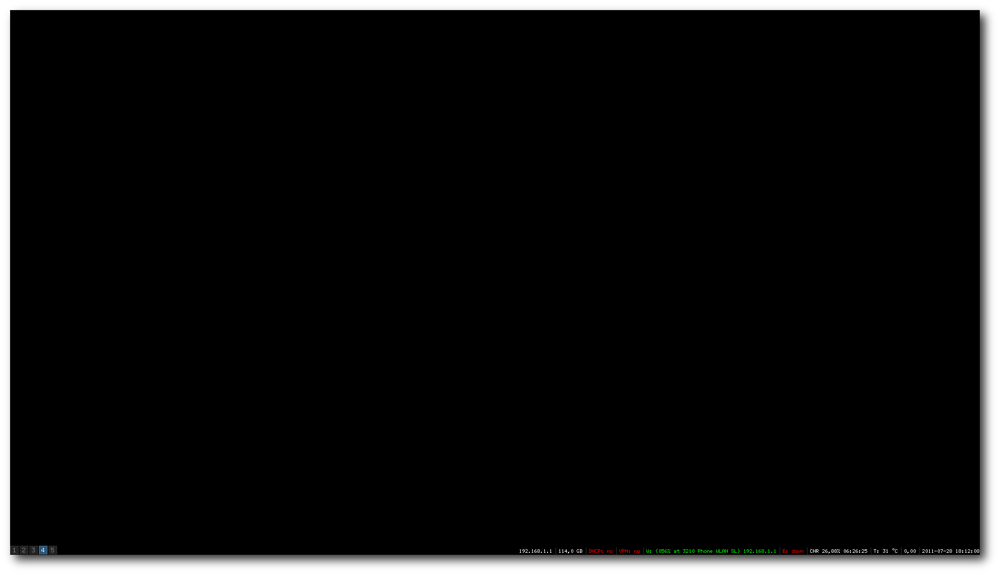i3status in den Standardeinstellungen, platziert am rechten unteren Bildschirmrand.
Bildschirmhintergrund
Wer den tristen schwarzen Hintergrund satt hat, sollte xsri probieren. Mit diesem kleinen Programm kann man auf den Rootscreen von X Bilder zeichnen lassen. Auch hier hilft ein Blick in die Manpage [6]. Nach der Installation aus der Paketverwaltung kann man auch dieses Programm bei jedem Start von i3 ausführen lassen. Dies geschieht mit einem kleinen Eintrag in der Konfiguration von i3 ( ~/.i3/config bzw. /etc/i3/config):
exec xsri {Parameter}
Die Parameter muss man individuell auswählen, so kann man z. B. nur eine andere
Farbe als Hintergrund festlegen:
$ xsri -{}-color=FARBE
Oder man setzt einen Farbverlauf von oben nach unten:
$ xsri -{}-color=FARBE1 -{}-color2=FARBE2 -{}-vgradient
Oder vollzieht das Gleiche von links nach rechts:
$ xsri -{}-color=FARBE1 -{}-color2=FARBE2 -{}-hgradient
Oder man setzt auch ein Hintergrundbild, das im Idealfall genau so groß wie die
Bildschirmauflösung ist:
$ xsri /pfad/zum/bild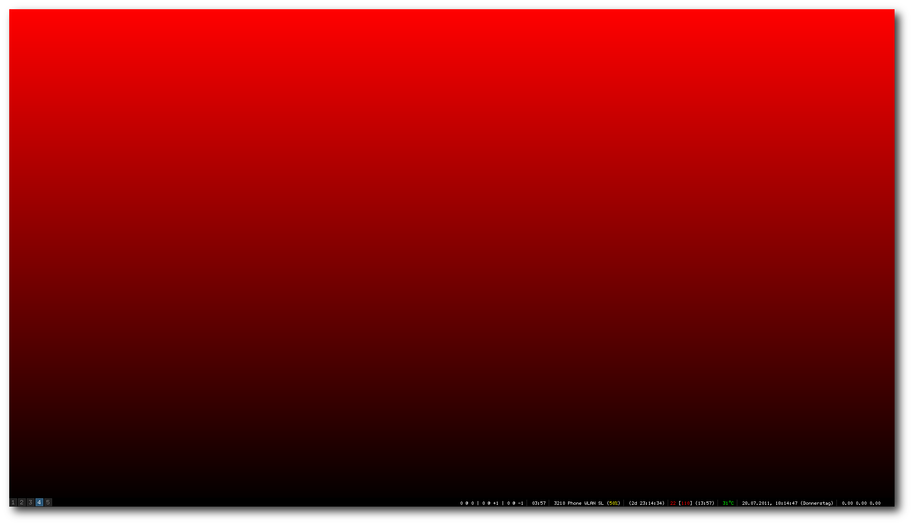
Vertikaler Farbverlauf als Hintergrund, erzeugt mit xsri --color=red --color2=black --vgradient.
Das sind noch lange nicht alle Möglichkeiten. Wer noch mehr ausprobieren will, sollte sich die oben erwähnte Manpage [6] ansehen.
Screenlocker
Auch um den Bildschirm zu sperren liefert i3 ein Werkzeug mit: i3lock [7] . Nachdem man es installiert hat (wieder je nach Distribution aus der Paketverwaltung oder selbst kompilieren), kann man es durch ein einfaches$ i3lockaufrufen. Der Bildschirm wird weiß und versetzt sich erst nach der Eingabe des eigenen Passwortes wieder in den alten Zustand. Aber natürlich kann man auch hier noch eine Menge Parameter übergeben:
- Standardmäßig forkt sich i3lock in den Hintergrund, wenn man das (aus welchem Grund auch immer) nicht will, kann man diese Funktion mit -n bzw. --nofork deaktivieren.
- Wenn man möchte, dass i3lock bei Eingabe eines falschen Passworts piept, hilft der Parameter -b bzw. --beep.
- i3lock kann beim Start automatisch den Bildschirm ausschalten. Diese Funktion wird mit -d bzw. --dpms aktiviert.
- Wenn man statt des weißen Bildschirms eine andere Farbe will, kann man diese mit -c FARBE bzw. --color FARBE festlegen.
- Auch ein Bild lässt sich festlegen. Dazu verwendet man den Parameter -i /pfad/zum/bild bzw. --image /pfad/zum/bild.
- Zusammen mit dem Parameter -i bzw. --image kann man mit dem -t bzw. --tiling Parameter festlegen, dass sich das Bild kacheln (wiederholen) soll.
- Ein kleines „Easteregg“ hat i3lock auch noch zu bieten. Wenn man ein Bild von einem Desktop und mit dem Parameter -p win bzw. --pointer win einen Mauszeiger anzeigen lässt, scheint es so als ob der Computer nicht gesperrt ist. Vielleicht fällt ja irgendwann mal jemand drauf herein …
Fazit
Für experimentierfreudige Nutzer, die nicht vor Konfigurationsdateien zurückschrecken, ist i3 auf jeden Fall einen Blick wert. Ob man im Endeffekt die Einarbeitungszeit für den Umstieg aufbringen will, muss jedoch natürlich jeder selbst für sich entscheiden. Wer sich an den Umstieg wagen will, sollte sich auf jeden Fall auch den „i3 User's Guide“ [10] genauer ansehen. In der Anleitung werden alle Möglichkeiten, die der Fenstermanager i3 bietet, ausführlich erklärt. Links[1] http://i3wm.org/
[2] http://i3wm.org/i3status/
[3] http://dzen.geekmode.org/
[4] http://i3wm.org/i3status/manpage.html
[5] http://dzen.googlecode.com/svn/trunk/README
[6] http://linux.die.net/man/1/xsri
[7] http://i3wm.org/i3lock/
[8] http://manpages.ubuntu.com/manpages/natty/man1/i3lock.1.html
[9] https://aur.archlinux.org/packages.php?ID=50985
[10] http://i3wm.org/docs/userguide.html
| Autoreninformation |
| Robert Knauer benutzt seit 3 Jahren Linux, anfangs Ubuntu mit GNOME. Vor einem Jahr kam der Wechsel auf Arch Linux mit i3 und ist seitdem begeistert von den Möglichkeiten eines Tiling Fenstermanagers. |
Zum Index
Cassandra – Die Datenbank hinter Facebook
von Jochen Schnelle Datenbanksysteme gibt es heutzutage viele – sowohl relationale wie z. B. MySQL, PostgreSQL oder Oracle als auch die verschiedenen Systeme aus dem Bereich der sogenannten „NoSQL“-Datenbanken (siehe „NoSQL – Jenseits der relationalen Datenbank“ in freiesMagazin 8/2010 [1]). Zu letzteren gehört auch Cassandra [2], wobei diese Datenbank in sofern „anders“ ist, als dass sie ursprünglich von Facebook [3] speziell für Facebook und deren spezifische Probleme entwickelt wurde.Entwicklung
Die Entwicklung von Cassandra wurde durch das sogenannte „Inbox Search Problem“ motiviert. Dabei geht es darum, dass ein Facebooknutzer seine erhaltenen und gesendeten Nachrichten nach Begriffen durchsuchen kann. Grundsätzlich ist dies natürlich leicht machbar. Bei Facebook bestand das Problem aber darin, dass es für die Anzahl der aktiven Nutzer kombiniert mit der gespeicherten und konstant (sowie vermutlich relativ schnell) wachsenden Datenmenge keine ausreichend performante Lösung mehr mit MySQL & Co. gab. Also wurde Cassandra entwickelt – und das Problem damit erfolgreich gelöst. Die Datenbank ist dabei in Java implementiert. Aufgrund der Anforderungen ist es nicht verwunderlich, dass Cassandra auf hohe Schreib- und Lesedurchsätze optimiert ist, wobei in der Standardeinstellung die Schreibvorgänge asynchron erfolgen, d. h. die Daten werden erst im RAM gehalten und dann „gebündelt“ auf die Festplatte geschrieben. Des Weiteren unterstützt Cassandra die Partitionierung der Datenbank, wobei die Rechner auch an verschiedenen Orten (Rechenzentren) stehen können. Außerdem beherrscht die Datenbank Replikation, automatische Erkennung von ausgefallenen Rechnern im Datenbankverbund und ist sehr gut skalierbar. Die Details und Hintergründe hierzu findet man in der sechsseitigen Veröffentlichung „Cassandra – A Decentralized Structured Storage System“ [4], welche sehr empfehlenswert ist, wenn man sich näher mit Cassandra beschäftigen möchte.Open Source
Nun erfreut sich Facebook bekanntlich nicht uneingeschränkter Beliebtheit unter den Computernutzern und mancher Leser mag Cassandra deswegen kritisch gegenüberstehen. Erfreulicherweise kann an dieser Stelle aber Entwarnung gegeben werden: Cassandra wurde im Frühjahr 2009 an die Apache Foundation [5] übergeben und ist somit Open Source unter der Apache-Lizenz. Seit Februar 2010 ist die Datenbank ein „Top-Level-Projekt“, die Entwicklung wird somit aktiv vorangetrieben.Datenmodell
Cassandra besitzt ein relativ einfaches Datenmodell [6] [7]. Dies ist eine Mischung aus einem Key-Value-Store und einer spaltenorientierten Datenbank [8]. Die Daten werden dabei in „Column Families“ (kurz: CF) organisiert. Eine CF besteht aus beliebig vielen „Row Keys“, welchen wiederum beliebig viele Schlüssel-Werte-Paare zugeordnet werden können. Im Cassandra-Kontext werden die Schlüssel dabei als „Column“ (auf deutsch: Spalte) bezeichnet. Eine CF ist also eine mehrdimensionale Map. Verschiedenen Row Keys können Werte für gleiche Spalten zugeordnet werden – dies muss aber nicht der Fall sein. Des Weiteren ist das Datenmodell von Cassandra zwar strukturiert, es besteht aber keine Notwendigkeit der Definition vorab. Das heißt im laufenden Betrieb können jederzeit neue Columns hinzugefügt werden. Eine Column Family mit zwei Row Keys kann also z. B. so aussehen:Row Key: "User_1" Column "Name" - Wert: "Otto" Column "Alter" - Wert: "40" Row Key: "User_2" Column "Name" - Wert: "Susi" Column "Alter" - Wert: "25" Column "Nickname" - Wert: "TurboS"Neben den zuvor beschriebenen Column Families kennt Cassandra noch „Super Columns“. Hierbei handelt es sich um eine erweiterte Variante der normalen CF, die eine Ebene mehr hat. Dies kann man sich so vorstellen, dass die Column wiederum eine Column Family ist. Das folgenden Schema verdeutlicht dies:
Row Key: "User_1": Super Column "Name": Column "Vorname" - Wert: "Otto" Column "Nachname" - Wert: "Normal" Super Column "Kontaktdaten": Column "E-Mail" - Wert: "otto@example.de" Column "Jabber" - Wert: "on@superjabber.de" Row Key: "User_2": Super Column "Vorname": Column "Vorname" - Wert: "Susi" Column "Nachname" - Wert: "Sorglos" Column "Maedchenname" - Wert: "Sonnenschein" Super Column "Kontaktdaten": Column "E-Mail" - Wert "susi@sorglos.de"Zu erwähnen ist noch, dass die Datenbank zusätzlich zu jedem Wert einen „Timestamp“ (auf deutsch: Zeitstempel) speichert, der angibt, wann der Wert in die jeweilige Column geschrieben wurde. Dies geschieht automatisch. CF und Super Columns wiederum werden in „Keyspaces“ abgelegt. Ein Keyspace kann dabei beliebig viele Column Families und Super Columns enthalten. Die Daten sind dabei aber völlig getrennt voneinander, der Keyspace ist also eine Art „Sammelcontainer“. Abfragen der Datenbank über mehrere Column Families hinweg, was einem „Join“ über mehrere Tabellen in relationalen Datenbanken entspräche, gibt es in Cassandra nicht. Cassandra kennt keine verschiedenen Datentypen, alles wird intern als „ByteType“ gespeichert, wobei sowohl Schlüssel als auch Werte beliebig lang sein können. Da binäre Daten für Menschen bekanntlich recht schwierig zu lesen sind, gibt es natürlich auch die Möglichkeit, Daten z. B. als ASCII- oder UTF-8-Text zu speichern.
Installation
Die Installation von Cassandra ist recht simpel. Die einzige Voraussetzung ist, dass Java auf dem Rechner installiert ist. Cassandra ist nicht sonderlich wählerisch, was die Java-Implementierung angeht, solange es eine halbwegs aktuelle Version 6 (bezogen auf Sun Java) ist. Die Datenbank läuft mit Sun Java, OpenJDK (welches viele Linux-Distributionen mitbringen) sowie diversen anderen Java-Implementierungen, welche aber eher im gewerblichem Umfeld zu finden sind. Danach muss man lediglich von der Downloadseite des Projekts [9] das aktuelle, gepackte Archiv mit der vorkompilierten Version herunterladen und diese in ein Verzeichnis entpacken. Zum lokalen Testen kann dies im Homeverzeichnis erfolgen, für die systemweite Nutzung empfiehlt sich unter Linux/Unix natürlich eher /opt. Cassandra läuft aber auch unter Windows. Dazu sind nur einige Pfade (z. B. für den Speicherort der Logdateien) anzupassen, da in der Voreinstellung Unix-/Linux-Pfade eingetragen sind. Details dazu findet man im Blogeintrag „Cassandra Installation and Configuration“ [10]. Im Folgenden wird davon ausgegangen, dass Cassandra im Verzeichnis /opt/cassandra liegt. Für diesen Artikel wurde die Programmversion 0.8.2 verwendet.Erste Schritte
Bevor es richtig los geht, noch einige Bemerkungen vorab: Im Folgenden wird das Schreiben und Lesen von Daten in die Datenbank an sich gezeigt. Dazu wird eine einzelne Instanz der Datenbank auf dem lokalen Rechner genutzt. Wer Partitionierung, Replikation und Ähnliches nutzen möchte, dem seien die diversen Hilfeseiten zu diesen Themen im Cassandra-Wiki [11] empfohlen. Des Weiteren unterstützt Cassandra auch die Authentifizierung von Nutzern [12], worauf hier auch nicht weiter eingegangen wird. Ein Großteil der Konfiguration wird in der Datei /opt/cassandra/conf/cassandra.yaml vorgenommen [13]. Als Erstes muss man die Datenbank starten. Dies geschieht via Terminal mit Root-Rechten und dem Befehl# /opt/cassandra/bin/cassandraDas Programm startet dabei dann automatisch im Hintergrund (Daemon), wobei nichtsdestotrotz beim Start eine Reihe vom Meldungen ausgegeben werden. Sollte hier ein Fehler auftreten, so sollte man zuerst die Java-Version prüfen. Ist der Start erfolgreich verlaufen, so lauscht die Datenbank jetzt auf localhost und Port 9160. Möchte man das Programm im Vordergrund starten, um z. B. beim Testen alle Ausgaben im Terminal zu sehen, so fügt man einfach die Option -f beim Start hinzu. Cassandra an sich wird über die Thrift-Schnittstelle [14] angesprochen. Neben Java gibt es auch noch für diverse andere Programmiersprachen wie Python, Ruby und Perl Bibliotheken, um auf die Datenbank zuzugreifen. Im Folgenden wird auf die Cassandra-Kommandozeile (kurz: Cassandra CLI) zurückgegriffen, welche in der Standardinstallation bereits enthalten ist. Die Kommandozeile startet man über den Befehl
$ /opt/cassandra/bin/cassandra-cliworaufhin eine kurze Willkommensmeldung und der neue Prompt
[default@unknown]erscheint. Die Eingabe von
[default@unknown] help;listet alle verfügbaren Befehle auf, wobei die Liste mit 24 Befehlen sehr übersichtlich ist. Eine recht detaillierte Hilfe zu jedem Befehl ist ebenfalls vorhanden. Diese erreicht man, indem man help gefolgt vom Befehl aufruft, also z. B.
[default@unknown] help create keyspace;Wie man sieht, muss jede Befehlszeile – wie unter Java auch üblich – mit einem Semikolon ; abgeschlossen werden. Jetzt verbindet man sich mit dem laufenden Cassandra-Server über den Befehl
[default@unknown] connect localhost/9160;Eine kurze Statusmeldung zeigt, ob die Verbindung erfolgreich erstellt wurde. Da außer dem Keyspace System, welche von der Datenbank selbst genutzt wird, keiner angelegt ist, muss zuerst ein neuer angelegt werden:
[default@unknown] create keyspace demo;Weiterhin muss man der Datenbank mitteilen, dass man diesen jetzt aktiv nutzen möchte:
[default@unknown] use keyspace demo;Der Prompt ändert sich dann auch zu
[default@demo]
Eine Column Family anlegen und löschen
Jetzt kann man eine oder mehrere Column Families oder Super Columns anlegen. Dies geschieht mit dem Befehl[default@demo] create column family Kontakt;wodurch die CF Kontakt angelegt wird. Diese CF kann man nun mit Inhalt füllen. Allerdings erwartet Cassandra alle Schlüssel, Spalten und Werte in der Form „BytesType“, dem weiter oben bereits erwähnten Standarddatentyp. Dieser ist für Menschen aber schwerlich zu nutzen, daher empfiehlt es sich, Text UTF-8-kodiert abzulegen. Dazu gibt es drei Wege. Der erste Weg ist, dass man die Datenbank veranlasst anzunehmen, dass alles UTF-8 ist. Dies erledigt man mit dem Befehl assume (auf Deutsch: „annehmen“):
[default@demo] assume Kontakt comparator as utf8; Assumption for column family 'Kontakt' added successfully. [default@demo] assume Kontakt validator as utf8; Assumption for column family 'Kontakt' added successfully. [default@demo] assume Kontakt keys as utf8; Assumption for column family 'Kontakt' added successfully.Auf diesem Weg wurde für Spaltennamen, Werte und Schlüssel UTF-8 als Eingabe- und Ausgabekodierung festgelegt. Der Erfolg jedes assume-Befehls wird bestätigt (wie oben auch zu sehen ist). Der zweite Weg wäre, dass man die Kodierung direkt beim Anlegen der CF angibt. Dies bietet sich immer dann an, wenn man weiß, dass man eine feste Anzahl von Spalten hat. Der Befehl dafür lautet:
[default@demo] create column family Kontakt2 with key_validation_class = UTF8Type and comparator = UTF8Type and
... column_metadata = [
... {column_name: 'name', validation_class: UTF8Type},
... {column_name: 'alter', validation_class: IntegerType}];
wodurch man die CF Kontakt2 angelegt hat.
Der dritte Weg besteht darin, jedem Wert explizit die Kodierung
voranzustellen, was weiter unten im Abschnitt „Zählerspalten“
genutzt wird. Da dies aber zumindest auf der Kommandozeile
erheblich mehr Tipparbeit ist, empfiehlt sich dieser Weg nur für
kurze Tests bzw. Abfragen.
Zurück zum Beispiel: Da im folgenden die CF Kontakt nicht mehr
benötigt wird, kann diese gelöscht werden, und zwar mit dem Befehl
drop:
[default@demo] drop column family Kontakt;
Daten einpflegen
Jetzt kann man Daten in die Datenbank einpflegen. Die API von Cassandra ist hier recht simpel, weil es nur drei Operationen gibt: set, also das Hinzufügen von Daten, get, das Abfragen von Daten und del zum Löschen von Daten. Als Erstes werden ein paar Daten in den Datenbank eingegeben:[default@demo] set Kontakt2['User_1']['alter'] = 25; Value inserted. [default@demo] set Kontakt2['User_1']['name'] = 'Susi'; Value inserted.So wurde in der CF Kontakt2 der Schlüssel User_1 angelegt, die Spalte alter mit dem Wert 25 und die Spalte name mit dem Wert Susi gefüllt. Cassandra unterscheidet bei den Spaltennamen übrigens zwischen Groß- und Kleinschreibung, d. h. man könnte sowohl eine Spalte name als auch eine Spalte Name in der selben CF haben. Weiterhin können Werte auch temporär angelegt werden. Dazu muss man zusätzlich eine Time to live (übersetzt: Überlebenszeit) in Sekunden angeben. Nach Ablauf der Zeit löscht die Datenbank den Wert dann selbstständig [15]. Möchte man diese Daten nun abfragen, geschieht dies beispielsweise mit dem folgendem Befehl:
[default@demo] get Kontakt2['User_1']; => (column=alter, value=25, timestamp=1311881829502000) => (column=name, value=Susi, timestamp=1311881821337000) Returned 2 results.Im obigen Beispiel wurden alle Daten von User_1 abgefragt. Natürlich kann man zusätzlich auch noch die Spalte spezifizieren, wie zum Beispiel:
[default@demo] get Kontakt2['User_1']['name']; => (column=name, value=Susi, timestamp=1311881821337000)Möchte man alle Datensätze einer CF abfragen, so lautet der Befehl:
[default@demo] list Kontakt2; Using default limit of 100 ------------------- RowKey: User_1 => (column=alter, value=25, timestamp=1311881829502000) => (column=name, value=Susi, timestamp=1311881821337000)Für das folgende Beispiel wird noch ein zweiter und dritter Datensatz angelegt:
[default@demo] set Kontakt2['User_2']['name'] = 'Otto'; Value inserted. [default@demo] set Kontakt2['User_2']['alter'] = 30; Value inserted. [default@demo] set Kontakt2['User_3']['name'] = 'Susi'; Value inserted. [default@demo] set Kontakt2['User_3']['alter'] = 30; Value inserted.Cassandra unterstützt auch die Indizierung von Spalten, um nach Werten in Spalten über mehrere Schlüssel hinweg suchen zu können. Die Indizierung muss explizit vorgenommen werden. Dazu aktualisiert man die Definition der CF Kontakt2:
[default@demo] update column family Kontakt2 with key_validation_class = UTF8Type and comparator = UTF8Type and
... column_metadata = [
... {column_name: 'name', validation_class: UTF8Type},
... {column_name: 'alter', validation_class: IntegerType, index_type: KEYS}];
Mit dem Befehl update wird eine vorhandene CF komplett
aktualisiert, weshalb man auch sämtliche Vorgaben, die man schon bei
create gemacht hat, wiederholen muss, weil diese sonst wieder mit
den Standardvorgaben überschrieben werden. Hier wird mit dem Update
zusätzlich die Spalte alter indiziert. KEYS ist übrigens der
einzige Indextyp, der aktuell von Cassandra unterstützt wird.
Das erfolgreiche Anlegen des Indexes kann man auch prüfen (die
folgende Ausgabe ist gekürzt):
[default@demo] describe keyspace demo; Keyspace: demo: ... Column Families: ColumnFamily: Kontakt2 ... Built indexes: [Kontakt2.Kontakt2_alter_idx] Column Metadata: Column Name: alter Validation Class: org.apache.cassandra.db.marshal.IntegerType Index Name: Kontakt2_alter_idx Index Type: KEYS Column Name: name Validation Class: org.apache.cassandra.db.marshal.UTF8TypeMit Hilfe des Indexes kann man jetzt Abfragen starten, wie z. B.:
[default@demo] get Kontakt2 where alter = 30; ------------------- RowKey: User_2 => (column=alter, value=30, timestamp=1311882142180000) => (column=name, value=Otto, timestamp=1311882132982000) ------------------- RowKey: User_3 => (column=alter, value=30, timestamp=1311882174898000) => (column=name, value=Susi, timestamp=1311882156188000)Cassandra kann übrigens nicht allein abfragen, ob ein Wert kleiner oder größer ist. Der Befehl
[default@demo] get Kontakt2 where alter < 30; No indexed columns present in index clause with operator EQführt, wie man sieht, zu einem Fehler. Weitere Hinweise und Details zu Indices findet man in der Dokumentation [16]. Möchte man etwas löschen, so dient dazu der Befehl del:
[default@demo] del Kontakt2['User_3']; row removed.del akzeptiert als Argument nicht nur – wie hier im Beispiel – Rowkeys, sondern auch Spaltennamen, sowohl von regulären Spalten als auch von im Folgenden beschriebenen „Super Columns“.
Anlegen von „Super Columns“
Das Anlegen von CF vom Typ „Super Columns“ funktioniert im Prinzip genauso, nur muss man angeben, dass man eine Super Column anlegen will:[default@demo] create column family Super1 with column_type = 'Super' and comparator = 'UTF8Type' and ... subcomparator = 'UTF8Type' and key_validation_class = 'UTF8Type';column_type legt also fest, dass die CF vom Typ Super sein soll. Jetzt kann man wie gewohnt Daten eingeben, wobei man eine Spalte mehr hat, nämlich die Super Column:
[default@demo] set Super1['User_1']['name']['vorname'] = 'Susi'; Value inserted. [default@demo] set Super1['User_1']['name']['nachname'] = 'Sorglos'; Value inserted. [default@demo] set Super1['User_1']['kontaktdaten']['email'] = 'susi@sorglos.de'; Value inserted.name und kontaktdaten sind in diesem Beispiel die Super Columns. Abfragen funktionieren analog wie bei normalen CFs:
[default@demo] get Super1['User_1']; => (super_column=kontaktdaten, (column=email, value=susi@sorglos.de, timestamp=1311963575308000)) => (super_column=name, (column=nachname, value=Sorglos, timestamp=1311963511018000) (column=vorname, value=Susi, timestamp=1311963486598000))Weitere Informationen findet man im Cassandra-Wiki und auch im Blogeintrag „WTF is a Super Column“ [17], welcher auch ein Beispiel für die Umsetzung der Datenbankstruktur für ein Blog enthält. Wer ein komplettes, lauffähiges Programm sucht, welches auf Cassandra basiert, dem sei Twissandra [18] empfohlen. Das ist ein Twitter-Klon, der in Python geschrieben ist und Cassandra als Datenbank im Hintergrund verwendet.
Alternative Spaltennamen
Bisher wurde immer ein Text als Spaltenname verwendet. Dies ist zwar in vielen Fällen sinnvoll, Cassandra erlaubt aber auch andere Alternativen, wie z. B. eine zeitbasierte UUID („Universally Unique Identifier“, auf Deutsch „universelle, eindeutige Identifizierung“), im Cassandra-Kontext „timeuuid“ genannt. Der Einsatz einer timeuuid ist immer dann sinnvoll, wenn man Werte zeitabhängig sortieren will, z. B. versendete oder empfangene Nachrichten. Der Einsatz von timeuuid als Spaltenname ist nicht weiter schwierig:
[default@demo] create column family Nachrichten with key_validation_class = 'UTF8Type' and comparator = 'LexicalUUIDType';
... schemas agree across the cluster
[default@demo] set Nachrichten['User_1'][timeuuid()]=utf8('Text 1');
Value inserted.
[default@demo] set Nachrichten['User_1'][timeuuid()]=utf8('Text 2');
Value inserted.
[default@demo] set Nachrichten['User_1'][timeuuid()]=utf8('Text 3');
Value inserted.
[default@demo] get Nachrichten['User_1'];
=> (column=f02fde80-c123-11e0-0000-10dcf378bfff, value=Text 1, timestamp=1312742091887000)
=> (column=f3aa5f40-c123-11e0-0000-10dcf378bfff, value=Text 2, timestamp=1312742097719000)
=> (column=f5dd44d0-c123-11e0-0000-10dcf378bfff, value=Text 3, timestamp=1312742101405000)
Returned 3 results.
Man muss also lediglich als Spaltenname timeuuid() einsetzen. Dies
funktioniert natürlich auch bei Super Columns.
Zählerspalten
Zu guter Letzt sei noch erwähnt, dass Cassandra auch „Counter Columns“ (auf Deutsch: „Zählerspalten“) kennt. Diese müssen beim Anlegen der CF explizit definiert werden:[default@demo] create column family zaehler with default_validation_class=CounterColumnType;Mit den Befehlen incr und decr können nun die Zähler erhöht und reduziert werden:
[default@demo] incr zaehler[utf8('User_1')][utf8('zahl')];
Value incremented.
[default@demo] incr zaehler[utf8('User_1')][utf8('zahl')];
Value incremented.
[default@demo] get zaehler[utf8('User_1')];
=> (counter=7a61686c, value=2)
Returned 1 results.
[default@demo] incr zaehler[utf8('User_1')][utf8('zahl')] by 10;
Value incremented.
[default@demo] decr zaehler[utf8('User_1')][utf8('zahl')] by 5;
Value decremented.
[default@demo] get zaehler[utf8('User_1')];
=> (counter=7a61686c, value=7)
Für wenn ist Cassandra interessant?
Die allerwenigsten Nutzer werden auch nur annähernd so viele Daten haben, dass sie eine verteilte Datenbank brauchen, welche zusätzlich hohe Schreib-/Leseraten bietet und auch Datenmengen im zweistelligen Terabyte-Bereich handhaben kann. Replikation beherrschen heutzutage ebenfalls viele Datenbanken, inkl. die Vertreter aus der relationalen Riege wie MySQL oder PostgreSQL (seit dem letzten Major-Release). Nichtsdestotrotz ist Cassandra auch für kleine Datenmengen und einfache Setups von Interesse, wenn man sich das Datenmodell zu Nutze macht. Die Daten werden in den Column Families bzw. Super Columns zwar hoch strukturiert gespeichert, es besteht jedoch kein Zwang, vorab ein Schema in Form von Spaltennamen oder Schlüssel festzulegen. Von daher bietet sich Cassandra für Anwendungen mit dynamisch wachsenden Inhalten, wie z. B. Blogs und Wikis, an. Für diese ist weiterhin auch interessant, dass die Datenbank standardmäßig einen Zeitstempel mitschreibt, sodass das chronologische Auslesen ohne Weiteres mit Bordmitteln erledigt werden kann. Dazu sei auch noch gesagt, dass die APIs in den verschiedenen Programmiersprachen zumeist Möglichkeiten bieten, die Sortierreihenfolge zu beeinflussen, was auf der Kommandozeile nicht möglich ist. Der Zeitstempel kann z. B. für den Revisionsverlauf in einem Wiki oder den zeitlichen Verlauf eines Blogs genutzt werden. Weiterhin kann es ein Vorteil sein, dass Cassandra sehr einfach zu installieren ist. Außer einer halbwegs aktuellen Java-Version hat das Programm keine Abhängigkeiten und ist nach dem Entpacken des Download-Archivs direkt einsatzbereit.Fazit
Cassandra bietet einen interessanten Ansatz, Daten strukturiert zu speichern, ohne an ein festes Schema gebunden zu sein. Dabei bietet sich die Datenbank in erster Linie für Text an. Weiterhin skaliert Cassandra sehr gut, sodass der Einsatz einer einzelnen, gegebenenfalls lokalen Instanz genauso möglich ist, wie ein Datenbankverbund über mehrere Rechner und Rechenzentren hinweg. Links[1] http://www.freiesmagazin.de/freiesMagazin-2010-08
[2] http://cassandra.apache.org/
[3] http://www.facebook.com/
[4] http://www.cs.cornell.edu/projects/ladis2009/papers/lakshman-ladis2009.pdf
[5] http://www.apache.org/
[6] http://wiki.apache.org/cassandra/DataModel
[7] http://maxgrinev.com/2010/07/09/a-quick-introduction-to-the-cassandra-data-model/
[8] http://de.wikipedia.org/wiki/Spaltenorientierte_Datenbank
[9] http://cassandra.apache.org/download/
[10] http://schabby.de/cassandra-installation-configuration/
[11] http://wiki.apache.org/cassandra/
[12] http://www.datastax.com/docs/0.8/configuration/authentication
[13] http://wiki.apache.org/cassandra/StorageConfiguration
[14] http://thrift.apache.org/
[15] http://www.datastax.com/docs/0.8/cli/using_cli#setting-an-expiring-column
[16] http://www.datastax.com/docs/0.8/data_model/secondary_indexes
[17] http://arin.me/blog/wtf-is-a-supercolumn-cassandra-data-model
[18] https://github.com/twissandra/twissandra
| Autoreninformation |
| Jochen Schnelle (Webseite) interessiert sich zwar nur marginal für Facebook, das Konzept von Cassandra hat aber trotzdem sein Interesse geweckt. |
Zum Index
Rezension: The Python Standard Library by Example
von Jochen Schnelle Wer seine Python-Kenntnisse vertiefen und verbessern will, wird sich früher oder später auch mit der Standardbibliothek beschäftigen. Da Python der Philosophie „batteries included“ folgt, ist diese recht umfangreich. Auch wenn die Online-Dokumentation [1] sehr ausführlich ist, so wünscht man sich vielleicht doch an der ein oder anderen Stelle weniger Erklärungen der API und ein paar mehr Beispiele. An diesem Punkt setzt das Buch „The Python Standard Library by Example“ an. Hält man das Buch in den Händen fällt zunächst auf, dass es sich durchaus um „schwere“ Literatur handelt. 1300 Seiten und ein Gewicht von etwas mehr als 1,6 kg sind mehr als die meisten anderen IT-Bücher. Das Buch ist also nichts für die kleine Gute-Nacht-Lektüre, über die man einschlafen möchte und die einem dann auf den Kopf fällt. Das Buch ist in 19 thematisch geordnete Kapitel unterteilt, welche wiederum in Unterkapitel untergliedert sind: eins pro vorgestelltem Modul. Je nach Umfang und Komplexität des jeweiligen Moduls sind die Unterkapitel zwischen zwei und ca. 40 Seiten lang. Die Themengebiete, welche unter anderem behandelt werden, sind: Text inklusive regulärer Ausdrücke, Datenstrukturen, Dateizugriff, persistente Datenspeicherung (Datenbanken), Umgang mit Archiven und Datenkompression, Threads und Prozesse, Internet-/Netzwerkzugriff, Anpassen der Python-Umgebung sowie Tests, Debugging, Performancemessung und -verbesserung. Die Struktur der Kapitel ist dabei immer gleich. Zu Beginn jedes Kapitels wird ein kurzer Überblick über die im Folgenden behandelten Module und deren Aufgabe gegeben. Die Einleitung der Unterkapitel besteht aus einer etwas detaillierten Einführung in das Modul sowie einem Hinweis darauf, seit welcher Pythonversion es in der Standardbibliothek enthalten ist. Das Ende jedes Unterkapitels bilden Links auf weiterführende Literatur und weitere Erklärungen im Internet. Dazwischen findet man dann jede Menge Beispiele zu den Klassen und Funktionen der jeweiligen Module. Dabei wird pro Beispiel, so weit möglich, immer nur eine Klasse bzw. Funktion gezeigt, oft gefolgt von einer kurzen Erläuterung. Alle Beispiele bestehen aus dem Python-Quelltext sowie der zugehörigen Ausgabe des Programms. Die meisten Beispiele nutzen viele print-Statements bzw. das Logging-Modul, welche per Ausgabe auf die Kommandozeile deutlich machen, was gerade passiert. Von daher ist es auch nicht verwunderlich, dass man sehr wenige „echte“ Programme findet, bei denen man den Programmcode eins zu eins für das eigene Projekt übernehmen kann. Allerdings sollte es auch kein größeres Problem sein, aus den Beispielen und zugehörigen Erklärungen ein „richtiges“ Programm zu bauen. Der Autor, Doug Hellmann, selber Softwareentwickler und Communication Director der Python Software Foundation, versteht es dabei geschickt, die Beispiele kompakt aber trotzdem verständlich, übersichtlich und nachvollziehbar zu halten. Gleiches gilt für den erklärenden Text zwischen den Beispielen. Das Buch ist in gut verständlichem Englisch geschrieben. Mit Schulenglisch und etwas Übung sollte man das Buch weitgehend verstehen können. „The Python Standard Library by Example“ ist aber kein Buch für Neueinsteiger. Dies wird auch in der Einleitung explizit gesagt. Es wird vorausgesetzt, dass man schon ein wenig Umgang mit Python hatte und zumindest die grundlegenden Datentypen und eingebauten Befehle geläufig sind. Ab der Stufe „fortgeschrittener Einsteiger“ sollte man aber keine Probleme mehr haben, den überwiegenden Teil der Beispiele nachzuvollziehen und zu verstehen. Hinzu kommt, dass die Kapitel alle in sich abgeschlossenen sind und in beliebiger Reihenfolge gelesen werden können bzw. – bei Desinteresse an einem bestimmten Thema – auch ganze Kapitel beim Lesen ausgelassen werden können. Das Buch bezieht sich komplett auf Python 2.x, wobei laut Aussage des Autors alle Beispiele auch unter der neuesten und letzten 2er Version, Python 2.7, getestet sind. Weiterhin ist noch anzumerken, dass das Buch etwas Unix-/Linux-lastig ist. Dies liegt wohl auch daran, dass der Autor selber Mac OS X einsetzt. Positiv ist dabei aber, dass es immer einen Hinweis im Buch gibt, wenn ein Beispiel nicht unter Windows lauffähig ist. Weiterhin ist noch zu erwähnen, dass das Buch aus dem recht populären Blog von Doug Hellmann „Python Module of the Week“ [2] hervorgegangen ist. Daraus macht der Autor auch keinen Hehl, diese Tatsache wird ebenfalls in der Einleitung explizit erwähnt. Auch wenn für das Buch viele Beispiele erweitert und aktualisiert wurden, so findet der regelmäßige Leser des Blogs im Buch eher wenig Neues. Das Buch kann auch als gute Ergänzung zu „Python – The Essential Reference 4th Edition“ aus dem gleichen Verlag (Buchrezension siehe freiesMagazin 9/2010 [3]) gesehen werden, da dort ebenfalls die Standardbibliothek behandelt wird, aber mit weniger Beispielen und mehr und umfassenderen Erklärung zur API. Zusammenfassend kann gesagt werden: Wer sich intensiver mit Pythons Standardbibliothek auseinandersetzen möchte oder wer in der Standarddokumentation Beispiele vermisst, der sollte auf jeden Fall über den Kauf dieses Buches nachdenken.| Buchinformationen | |
| Titel | The Python Standard Library by Example |
| Autor | Doug Hellmann |
| Verlag | Addison Wesley, 2011 |
| Umfang | 1344 Seiten |
| ISBN | 978-0321767349 |
| Preis | ca. 40,- Euro |
[1] http://docs.python.org/library/index.html
[2] http://www.doughellmann.com/PyMOTW/index.html
[3] http://www.freiesmagazin.de/freiesMagazin-2010-09
| Autoreninformation |
| Jochen Schnelle (Webseite) programmiert selber in Python. Das Buch hat ihm einen besseren und tieferen Einblick in verschiedene Module der Standardbibliothek gegeben. |
Zum Index
Rezension: Python von Kopf bis Fuß
von Michael Niedermair Das Buch „Python von Kopf bis Fuß“ von Paul Barry hat sich zur Aufgabe gemacht, dem Anfänger die Programmiersprache Python praxisnah und spielerisch zu vermitteln. Dabei wird auf die Grundlagen der Sprache, das Wichtigste über Persistenz, Ausnahmebehandlung, Webentwicklung, die Anbindung an die Datenbank SQLite und die Google App Engine eingegangen oder wie man allgemein „Daten in den Griff“ bekommt. Zusätzlich werden auch mobile Apps für Android-Smartphones behandelt.Was steht drin?
Das Buch ist in elf Kapitel aufgeteilt (plus Anhang und Index) und umfasst 458 Seiten. Eine ausführliche Einführung (31 Seiten) beschreibt den Inhalt, das Konzept von „Kopf bis Fuß“ und was den Leser in jedem Kapitel erwartet. Im ersten Kapitel (32 Seiten) geht es um die Einführung von Python, die Installation der Version 3 und wie man mit IDLE leichter Python lernen kann. Es wird anschließend gezeigt, wie man Listen erstellt, mit diesen arbeitet und z. B. in Schleifen ausgibt. Mittendrin befindet sich eine kleine FAQ. Es folgt die Erstellung von Funktionen bei der auch gezeigt wird, was es mit Rekursion auf sich hat. Im zweiten Kapitel (39 Seiten) wird Code wiederverwendet um zu zeigen, wie z. B. Funktionen in Module umzuwandeln und dabei Namensräume anzuwenden sind oder ein Paket zu erstellen ist. Im Anschluss wird gezeigt, wie man seinen Code auf der Internetplattform PyPI (Python Package Index [1]) als registrierter Nutzer hochladen und somit anderen Leuten zur Verfügung stellen kann. Im dritten Kapitel (31 Seiten) wird gezeigt, wie man mit Fehlern umgeht und diese abfangen kann. Als Beispiel wird hier unter anderem das zeilenweise Auslesen einer Textdatei und das Parsen der Zeilen verwendet. Im vierten Kapitel (34 Seiten) geht es um Persistenz und wie man Daten in Dateien speichern und wieder auslesen kann. Im fünften Kapitel (34 Seiten) wird der Umgang mit Daten beschrieben und aufgezeigt, wie man diese sortiert, formatiert, entsprechend umwandelt und Duplikate bei Listen erkennt. Im sechsten Kapitel (40 Seiten) stehen Dictionaries sowie die Erstellung von eigenen Klassen im Mittelpunkt und wie man Klassen durch Vererbung erweitert. Im siebten Kapitel (41 Seiten) wird gezeigt, wie man ein Programm ins Web bekommt bzw. wie man eine „Webapp“ erstellt. Dabei wird auf die entsprechende Datenmodellierung und das MVC-Konzept [2] eingegangen. Im achten Kapitel (37 Seiten) geht es darum, wie man Python auf seinem Smartphone einrichtet und hier kleine Anwendungen schreibt. Dabei wird auch gezeigt, wie man mit dem Simulator auf dem PC die Anwendung entwickeln und testen kann. Im neunten Kapitel (58 Seiten) werden Formulare und Daten-Dialoge bei mobilen Anwendungen besprochen. Es wird gezeigt, wie man die integrierte SQLite-Datenbank verwenden und dort seine Daten ablegen, abrufen etc. kann. Ein kurzer Ausflug in SQL ist inbegriffen. Im zehnten Kapitel (45 Seiten) geht es um viel besuchte Webapps. Reicht der Server für die Last aus, ist die Datenbank schnell genug und der Plattenplatz ausreichend, usw. Es wird gezeigt, wie man die Google App Engine für seine Webapp nutzen kann, um Formulare, Eingaben etc. mit dem entsprechenden Framework zu verwenden. Am Ende wird beschrieben, wie man seine Webapp in die Cloud bekommt. Im elften Kapitel (37 Seiten) geht es um Bereiche, die sich in den anderen Kapiteln nicht haben einfügen lassen, wie z. B. die Verwendung komplexerer CSV-Dateien, das Arbeiten mit dem „Zeit-zu-Sekunden-zu-Zeit-Modul“ und die Portierung auf Android. Im Anhang werden die Bereiche kurz erwähnt, die in den vorherigen Kapitel nicht behandelt worden sind, aber nach Meinung des Autors erwähnenswert sind, wie z. B. die Verwendung einer professionellen IDE, Testen von Anwendungen, fortgeschrittene Spracheigenschaften, reguläre Ausdrücke usw. Den Abschluss bildet das Stichwortverzeichnis mit zwölf Seiten.Wie liest es sich?
Das Buch ist für den absoluten Anfänger geschrieben und zeigt spielerisch, unterstützt mit vielen Bildchen – die u. a. Sprechblasen enthalten – wie man sich der Sprache Python nähert. Die grundlegenden Kenntnisse einer Programmiersprache werden dabei vorausgesetzt. Dazwischen sind FAQs enthalten, die versuchen, mögliche Fragen zu dem Bereich zu beantworteten. Viele Abschnitte sind redundant und wiederholen sich, um besser im Gedächtnis zu bleiben. Jedes Kapitel enthält viele Übungen, die teilweise aufgelöst werden. Der Text ist verständlich und man kann diesem meist ohne Schwierigkeiten folgen. Der erfahrene Benutzer wird die eine oder andere Seite überspringen, gerade wenn mal wieder viele Bilder verwendet worden sind.Kritik
Das Buch ist für den Python-Anfänger geschrieben und für diesen geeignet. Allerdings muss der Leser die Art der Reihe „von Kopf bis Fuß“ mögen, vor allem die vielen Bilder (teilweise aus den 50er-/60er-Jahren des letzten Jahrhunderts), die den Leser auch leicht vom eigentlichen Thema ablenken können. Die Reihenfolge der Kapitel erscheint manchmal etwas merkwürdig und der Anfänger erkennt nicht gleich den Sinn der Reihung. Zum Ausprobieren des Codes wird hier meist nur IDLE verwendet. Die Verwendung einer entsprechenden Entwicklungsumgebung, die gerade den Anfänger hilfreich unterstützt, wird daher deutlich vermisst. Bei einigen Bereichen wird die Komplexität der Aufgabe/Übung deutlich erhöht, was einen reinen Anfänger eventuell überfordert. Gerade an solchen Stellen ist dann Zusatzliteratur notwendig. Es stellt sich die Frage, ob der Python-Anfänger gleich ein Android-Smartphone oder eine Google App Engine als Programmierzielplattform verwenden will. Der Index ist bei diversen Einträgen mit zusätzlichen Stichworten wie Codeworten, Variablen etc. versehen und verweist auch öfter auf andere Einträge, ohne eine Seitenangabe zu enthalten. Für den Anfänger wirkt dies eher verwirrend. Die angegeben Seitenzahlen sind nicht immer sinnvoll ausgewählt, z. B. „TypeError-Ausnahme 56-57, 116, 247-249, 283-285“. Der Haupteintrag ist nicht besonders markiert, was dazu führt, dass man je nach Eintrag lange sucht, bis man die entsprechende Erklärung findet. Es entsteht der Eindruck, dass der Index erst automatisch erstellt und dann von Hand bearbeitet worden ist. Für den schon erfahrenen Benutzer ist das Buch weniger geeignet und dieser kann auf andere Python-Exemplare aus dem Verlag zurückgreifen, wo er für das Geld mehr erhält.| Buchinformationen | |
| Titel | Python von Kopf bis Fuß (1. Auflage) |
| Autor | Paul Barry, übersetzt von Lars Schulten |
| Verlag | O‘Reilly, Mai 2011 |
| Umfang | 458+31 Seiten |
| ISBN | 978-3-89721-318-0 |
| Preis | ca. 44,90 Euro |
[1] http://pypi.python.org/pypi
[2] https://secure.wikimedia.org/wikipedia/de/wiki/Model_View_Controller
| Autoreninformation |
| Michael Niedermair ist Lehrer an der Münchener IT-Schule und unterrichtet hauptsächlich Programmierung, Datenbanken und IT-Technik. Er beschäftigt sich seit Jahren mit vielen Programmiersprachen und setzt gerade Python im Zusammenhang mit FontForge für die Fonterstellung beim Linux Libertine Projekt ein. |
Zum Index
Leserbriefe
Für Leserbriefe steht unsere E-MailadresseLeserbriefe und Anmerkungen
Mobilausgabe
-> Haben Sie schon einmal über eine für E-Reader aufbereitete Ausgabe Ihres Magazins nachgedacht? Wie vielleicht/bestimmt andere Leser ebenso, würde ich mich darüber freuen, wenn ich freiesMagazin auf meinem Kindle (oder anderem E-Reader) lesen könnte. Für den Fall, dass Sie sich damit nicht auskennen, eine kurze Erklärung: Es gibt es sehr gutes, freies Tool namens Calibre, mit dem man E-Books verwalten und Online-Inhalte aufbereiten kann. Calibre läuft unter Linux genauso wie unter Windows. Das Abrufen von Online-Inhalten kann mit Hilfe sog. Recipes bzw. Schemata selbst angepasst und erweitert werden. Seit dem Kauf meines E-Readers habe ich nun schon einige Recipes selbst erstellt, um verschiedene Webangebote für das Lesegerät aufzubereiten. Ich habe auch versucht, das Mobile-Angebot von freiesMagazin entsprechend aufzubereiten. Allerdings ist das HTML automatisiert kaum zu verarbeiten.Gerald Backmeister <- Zur Mobilausgabe haben wir uns schon viele, viele Gedanken gemacht. Bisher ist es uns aber nicht gelungen mit den vorhandenen Daten (LaTeX, PDF oder HTML) eine für uns akzeptable Version zu erzeugen. (Erzeugen konnten wir natürlich ein ePub mit Calibre.) Ihre Aussage „Allerdings ist das HTML automatisiert kaum zu verarbeiten.“ können wir damit unterschreiben und sind ebenfalls daran verzweifelt. Die einzige Idee, die wir bisher hatten, war ein zusätzliche PDF-Version im A5-Hochformat, die dann von Calibre in ePub verarbeitet wird. Das war uns aber dato zu viel Arbeit, zumal unsere Leser laut der im Januar gestellten Umfrage [1] keine Mobilversion benötigen oder mit dem aktuellen Angebot noch zufrieden sind. Sollte es aber jemand wirklich schaffen, das bereitgestellte, dreispaltige PDF, die HTML-Version oder sogar den LaTeX-Code – den wir dann bereitstellen würden – in ein akzeptables ePub zu wandeln, würden wir natürlich nicht Nein sagen.
Dominik Wagenführ
Einzelne PDF-Artikel
-> Ich lese freiesMagazin sehr gerne, allerdings möchte ich manchmal auch einzelne gute Artikel als PDF auf meiner Festplatte archivieren und dann brauche ich oft nicht das gesamte Magazin, zumal das durchforsten ganzer Magazine auch aufwändiger ist, wenn man nur einen einzigen Artikel haben möchte. Daher würde ich es toll finden, wenn Ihr auf der Webseite ein Formular erstellen würdet, mit dem man dann von einzelnen Artikeln einer Ausgabe eine PDF Dateien generieren und downloaden könnte.Oliver C. <- Ich halte das für eine gute Idee und habe sie an unser Webteam weitergeleitet. Ggf. kann man da mit pdftk etwas machen. Die Frage ist, ob es so etwas schon vorgefertigt gibt oder ob wir diese Webanwendung selbst schreiben müssen. Wir halten Sie aber auf dem laufenden und werden es auf der Webseite ankündigen, sollte es so eine Funktion irgendwann geben. Vorab haben wir aber schon einmal eine kleine Umfrage gestartet, um zu prüfen wie viele Nutzer so eine Funktion in etwa hätte [2].
Dominik Wagenführ
xkcd-Comics
-> Nach kurzem Überfliegen des PDFs ist mir aufgefallen, dass Sie einen xkcd-Comic benutzten. Ein zusätzlicher Bestandteil des Comics sind die title-Texte, welche oft vergessen werden. Es würde mich freuen, wenn sie beim erneuten Benutzen dieser Comics den title-Text mit benutzen würden.n <- Wir vergessen den Titel nicht nur oft, sondern immer. ;) Das Thema beschäftigt uns seit mehreren Jahren, seit wir die xkcd-Comics nutzen. Wir würden diese Beschreibung gerne, ähnlich wie im Browser, per Mouse-over anzeigen. Bisher unterstützt aber nur der Adobe Reader so ein Feature. Sollten die anderen PDF-Betrachter irgendwann mitziehen oder es eine andere Möglichkeit geben, die Beschreibung versteckt anzuzeigen, fügen wir diese so schnell wie möglich ein. Ein allgemeiner Hinweis noch an dieser Stelle: Wer uns einen Leserbrief schreibt und eine Antwort erhalten möchte, sollte eine gültige E-Mail-Adresse angeben. Ansonsten fällt uns das Antworten sehr schwer.
Dominik Wagenführ
Perl-Tutorium – Teil 1, freiesMagazin 08/2011
-> Wenn man als Shebang #!/usr/bin/env perl benutzt, funktioniert das ganze sogar für perlbrew.Jonathan Kolberg (Kommentar)
Fedora 15, freiesMagazin 07/2011
-> Bezüglich des Startproblems von GNOME 3 in der VirtualBox habe ich evtl. eine Lösung anzubieten. Das Problem ist anscheinend, dass GNOME 3 unter Fedora 15 in der VirtualBox nicht auf Deutsch laufen will. Stellt man die Sprache allerdings auf Englisch um, läuft es bei mir problemlos. Ich habe das ganze auch [in meinem Blog] beschrieben [3].wolowitz (Kommentar)
Printausgabe
-> Gibt's freiesMagazin nur online [oder] auch demnächst als Heft?Volker Geißler <- freiesMagazin erscheint auschließlich in einer Online-Version und dies wird wohl auch so bleiben. Sowohl Aufwand wie auch Unkosten für eine Printausgabe wären für ein Projekt wie freiesMagazin viel zu hoch – schließlich speist sich freiesMagazin aus dem Antrieb seiner freiwilligen Mitarbeiter.
Thorsten Schmidt <- Zusätzlich gehen die Leserzahlen von Printausgaben fast jedes Magazins am Kiosk seit Jahren kontinuierlich zurück. In Zeiten des Internets sind fast alle Informationen online abrufbar, sodass nur noch wenige Leute wirklich echtes Papier in den Händen brauchen. Aus dem Grund wäre es auch nicht sinnvoll, auf dieses „tote Pferd“ zu setzen.
Dominik Wagenführ Links
[1] http://www.freiesmagazin.de/20110110-umfrage-mobilversion-freiesmagazin
[2] http://www.freiesmagazin.de/20110828-sollen-artikel-einzeln-abrufbar-sein
[3] http://wolowitzblog.wordpress.com/2011/05/29/fedora-15-mit-gnome-3-unter...
Die Redaktion behält sich vor, Leserbriefe gegebenenfalls zu kürzen. Redaktionelle Ergänzungen finden sich in eckigen Klammern. Die Leserbriefe kommentieren
Zum Index
Veranstaltungskalender
| Messen | ||||
| Veranstaltung | Ort | Datum | Eintritt | Link |
| openSUSE Conference | Nürnberg | 11.09.-14.09.2011 | frei | http://en.opensuse.org/Portal:Conference |
| Software Freedom Day | Weltweit | 17.09.2011 | frei | http://softwarefreedomday.org |
| Ubucon | Leipzig | 14.10.-16.10.2011 | - | http://www.ubucon.de |
| Brandenburger Linux-Infotag | Potsdam | 06.11.2011 | frei | http://blit.org/2011 |
| OpenRheinRuhr | Oberhausen | 12.11.-13.11.2011 | - | http://www.openrheinruhr.de |
| 13. LinuxDay | Dornbirn | 26.11.2011 | frei | http://linuxday.at |
Vorschau
freiesMagazin erscheint immer am ersten Sonntag eines Monats. Die Oktober-Ausgabe wird voraussichtlich am 2. Oktober unter anderem mit folgenden Themen veröffentlicht:- PHP-Programmierung – Teil 1: HTML
- Rezension: Einführung in die Android-Entwicklung
Zum Index
Konventionen
An einigen Stellen benutzen wir Sonderzeichen mit einer bestimmten Bedeutung. Diese sind hier zusammengefasst:| $: | Shell-Prompt |
| #: | Prompt einer Root-Shell – Ubuntu-Nutzer können hier auch einfach in einer normalen Shell ein sudo vor die Befehle setzen. |
| ~: | Abkürzung für das eigene Benutzerverzeichnis /home/BENUTZERNAME |
Zum Index
Impressum ISSN 1867-7991 | ||
| freiesMagazin erscheint als PDF und HTML einmal monatlich. | ||
| Kontakt | ||
| Postanschrift | freiesMagazin | |
| c/o Dominik Wagenführ | ||
| Beethovenstr. 9/1 | ||
| 71277 Rutesheim | ||
| Webpräsenz | http://www.freiesmagazin.de/ | |
| Autoren dieser Ausgabe | ||
| Herbert Breunung | Perl-Tutorium: Teil 2 – Literale, Arrays und Blöcke | |
| Martin Gräßlin | Trinity – Desktop ohne Zukunft | |
| Christian Imhorst | „I don't like spam“, oder wie man einen Mailserver testet | |
| Robert Knauer | i3 – ein Tiling Fenstermanager | |
| Mathias Menzer | Der August im Kernelrückblick | |
| Patrick Meyhöfer | Plattformen für die Entwicklung und Verwaltung von Open-Source-Projekten | |
| Michael Niedermair | Rezension: Python von Kopf bis Fuß | |
| Jochen Schnelle | Cassandra – Die Datenbank hinter Facebook, Rezension: The Python Standard Library by Example | |
| Erscheinungsdatum: 4. September 2011 | ||
| Redaktion | ||
| Frank Brungräber | Thorsten Schmidt | |
| Dominik Wagenführ (Verantwortlicher Redakteur) | ||
| Satz und Layout | ||
| Ralf Damaschke | Andrej Giesbrecht | |
| Tobias Kempfer | Nico Maikowski | |
| Ralph Pavenstädt | Matthias Sitte | |
| Korrektur | ||
| Daniel Braun | Andreas Breitbach | |
| Bastian Bührig | Stefan Fangmeier | |
| Mathias Menzer | Florian Rummler | |
| Karsten Schuldt | Janis von Seggern | |
| Stephan Walter | Toni Zimmer | |
| Veranstaltungen | ||
| Ronny Fischer | ||
| Logo-Design | ||
| Arne Weinberg (GNU FDL) | ||
Soweit nicht anders angegeben, stehen alle Artikel, Beiträge und Bilder in freiesMagazin unter der Creative-Commons-Lizenz CC-BY-SA 3.0 Unported. Das Copyright liegt beim jeweiligen Autor. freiesMagazin unterliegt als Gesamtwerk ebenso der Creative-Commons-Lizenz CC-BY-SA 3.0 Unported mit Ausnahme der Inhalte, die unter einer anderen Lizenz hierin veröffentlicht werden. Das Copyright liegt bei Dominik Wagenführ. Es wird erlaubt, das Werk/die Werke unter den Bestimmungen der Creative-Commons-Lizenz zu kopieren, zu verteilen und/oder zu modifizieren. Das freiesMagazin-Logo wurde von Arne Weinberg erstellt und unterliegt der GFDL. Die xkcd-Comics stehen separat unter der Creative-Commons-Lizenz CC-BY-NC 2.5 Generic. Das Copyright liegt bei Randall Munroe.
Zum Index
File translated from TEX by TTH, version 3.89.
On 21 Sep 2011, 18:05.